Guia do Bloco a Bloco
O editor 3D de construções de Minecraft que roda no navegador: monte bloco a bloco, veja com as texturas do seu pacote e leve para o jogo como .mcstructure (Bedrock) ou .schem (Java). Este guia passa por todas as funções do site, com capturas da própria tela.
Endereço: mooncake-cmd.github.io/Bloco-a-Bloco. Funciona no Chrome e no Edge, no computador e no celular, sem instalar nada e sem conta.
01A tela
Tudo acontece numa tela só. A área 3D ocupa o centro; a paleta de blocos fica à direita no computador (embaixo, no celular).
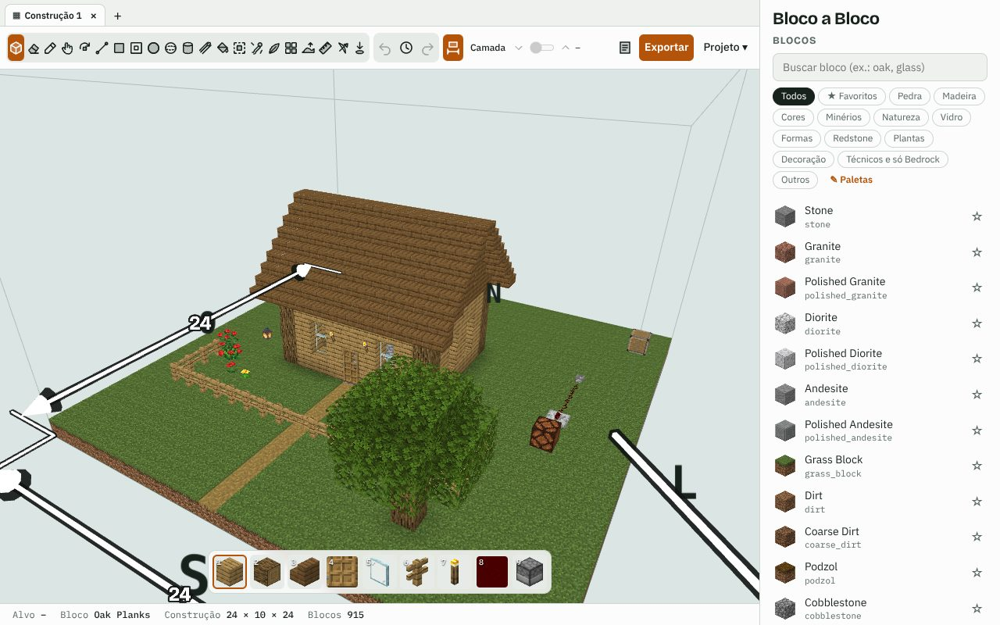
1 2 3 4 5 6 7 8 9 10 11 12- 1Ferramentas: pincel, borracha, conta-gotas, usar, girar, linha, caixa, caixa oca, esfera, esfera oca, mais formas, balde, selecionar, pincel de troca, pincel de mistura, esculpir, régua e teleporte (cap. 03).
- 2Desfazer, Histórico (o relógio: linha do tempo com ramos) e refazer (Ctrl+Z e Ctrl+Y), cap. 03.
- 3Medidas (liga e desliga as cotas de X, Y e Z, cap. 08) e Camada: mostra só até uma altura, para enxergar dentro da construção (cap. 05).
- 4Materiais (ícone de lista): lista de blocos usados, em pilhas de 64 (cap. 13).
- 5Exportar para .mcstructure ou .schem (cap. 11).
- 6Projeto: novo, salvar, abrir e importar, tamanho, grade, texturas, tema e ajuda (cap. 09).
- 7Área 3D: onde se constrói. A grade marca o chão; as letras N, S, L e O são a bússola.
- 8Hotbar: 9 blocos à mão, teclas 1 a 9 (cap. 06).
- 9Barra de status: posição do alvo, bloco e estado, tamanho e total de blocos (cap. 08).
- 10Busca de blocos por nome em inglês ou id (ex.:
oak,glass). - 11Paletas: Todos, Favoritos, Pedra, Madeira, Cores, Minérios, Natureza, Vidro, Formas, Redstone, Plantas, Decoração, Técnicos e só Bedrock, Outros e as suas; ✎ Paletas cria, edita e exclui (cap. 06).
- 12Lista de blocos: toque para pôr no espaço ativo da hotbar; a estrela marca favorito.
02Do zero ao jogo
O caminho mais comum, do primeiro acesso até a construção dentro do Minecraft Bedrock:
- Abra o site. Na primeira vez aparece uma casinha de exemplo; para começar do zero use Projeto → Novo (limpar tudo) e clique de novo para confirmar.
- Carregue as texturas uma vez em Projeto → Texturas… (o botão Baixar texturas padrão da janela traz o pacote padrão do Bedrock; ou use o seu). Sem isso os blocos aparecem com a cor média (cap. 10).
- Ajuste o tamanho em Projeto → Tamanho do espaço… se 32 × 32 × 32 não bastar.
- Escolha blocos na paleta, ponha na hotbar e construa com o pincel e as formas.
- Ajuste portas, alavancas e direções com Usar (U) e Girar (T).
- Confira a lista de materiais se for construir no modo sobrevivência.
- Exportar → Baixar .mcstructure. No jogo, um bloco de estrutura no modo Carregar, botão Importar, escolhe o arquivo.
- Guarde o projeto com Projeto → Salvar projeto (.json) para continuar em outro aparelho.
03Ferramentas
A barra do topo, da esquerda para a direita. Cada ferramenta tem uma tecla; no celular basta tocar no ícone.
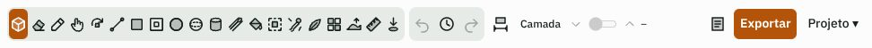
| # | Ferramenta | Tecla | Clique | Com Shift |
|---|---|---|---|---|
| 1 | Pincel | B | Coloca o bloco da hotbar na face apontada; arrastar pinta vários. | Vira borracha enquanto segura. |
| 2 | Borracha | E | Apaga o bloco apontado; arrastar apaga vários. Tamanho 1×1, 2×2 ou 3×3 no aviso do canto (veja abaixo). Porta, cama e plantas altas saem inteiras. | — |
| 3 | Conta-gotas | I | Copia o bloco apontado para o espaço ativo da hotbar (a tocha de parede vira tocha). | — |
| 4 | Usar | U | Abre e fecha porta, alçapão e portão; liga alavanca; acende fornalha, lâmpada e velas; muda idade de plantação, atraso do repetidor (1 a 4), modo do comparador, carga da âncora, nível da água e da luz. Numa muda, faz a árvore crescer. Na frente da estante entalhada, põe ou tira o livro do nicho clicado. Alavanca, botão e placa de pressão disparam o circuito de redstone (cap. 07). | Muda a segunda opção do bloco, quando existe (no repetidor e no comparador, liga e desliga). Numa muda, faz a versão grande da árvore. Na estante entalhada, enche ou esvazia todos os nichos. |
| 5 | Girar | T | Passa para a próxima direção: frente, eixo do tronco, escada de cabeça para baixo, laje em cima/embaixo/dupla. | Gira ao contrário. |
| 6 | Linha | L | Três cliques: o início, o ponto oposto e a altura (veja abaixo). Uma prévia mostra a forma e a barra de status mostra o tamanho. Um aviso no canto diz o passo e tem o botão Cancelar (ou Esc). | No último clique, apaga a forma em vez de construir. |
| 7 | Caixa sólida | R | ||
| 8 | Caixa oca (paredes) | H | ||
| 9 | Esfera sólida | S | Dois cliques: o centro e um ponto da borda (o raio). | |
| 10 | Esfera oca | O | ||
| 11 | Mais formas | C | Cilindro, cone, pirâmide, cúpula, arco e arestas, escolhidos no aviso do canto, com a opção Oco (veja abaixo). | No último clique, apaga a forma. |
| 12 | Balde | F | Clique num bloco: enche o espaço fechado ao lado da face clicada, até bater nos blocos (veja abaixo). | Troca a região ligada do mesmo bloco clicado pelo bloco da hotbar. |
| 13 | Selecionar | V | Dois cliques marcam os cantos opostos de uma área (em blocos ou no vazio). Com a área marcada: mover, copiar, recortar, colar, apagar e substituir (veja abaixo). | — |
| 14 | Pincel de troca | M | Pinta trocando só um tipo de bloco (a máscara) pelo bloco da hotbar, dentro de uma esfera ou cubo; o resto fica igual (veja abaixo). | Escolhe a máscara: o bloco clicado. |
| 15 | Pincel de bioma | Y | Pinta o bioma (planície nevada, pântano, deserto…) nas colunas do chão, em círculo ou quadrado: a grama ganha a cor do bioma e, com Transformar o terreno, o chão e a vegetação mudam (areia e cactos no deserto, neve, árvores…). O bioma vai junto para o mundo exportado (veja abaixo). | Conta-gotas: pega o bioma da coluna clicada. |
| 16 | Pincel de mistura | Q | Pinta com vários blocos de uma vez, cada um com uma porcentagem: cada voxel do pincel sorteia o seu (veja abaixo). | Põe o bloco clicado na mistura. |
| 17 | Esculpir terreno | K | Segure para elevar, afundar, suavizar ou aplainar o chão com um pincel redondo e suave (veja abaixo). | Troca elevar por afundar (e vice-versa) durante o traço. |
| 18 | Régua | N | Clique num bloco (A), depois em outro (B), depois em outro (C)... e o site desenha a cota de cada trecho, com setas e o número de blocos (veja abaixo). | — |
| 19 | Teleporte | J | Clique num bloco: a câmera desliza até ele e chega perto, mantendo o ângulo (cap. 04). | Entra em primeira pessoa em cima do bloco clicado (cap. 04). |
| 20–22 | Desfazer / Histórico / Refazer | Ctrl+Z / Y | Um traço de pincel ou uma forma inteira é um passo. O relógio abre a linha do tempo com todos os passos e ramos (veja abaixo). | Ctrl+Shift+Z também refaz. |
| 23 | Medidas | D | Liga e desliga as cotas de largura, altura e profundidade em volta da construção (cap. 08). Aceso = ligado. | — |
| 24–25 | Camada e altura | [ ] | Liga o corte por altura. As setas ao lado do controle descem e sobem uma camada por clique; o controle deslizante pula direto para uma altura (cap. 05). | — |
| 26 | Materiais | — | Lista de blocos usados, em pilhas de 64 (cap. 13). | — |
Pincel e a mira
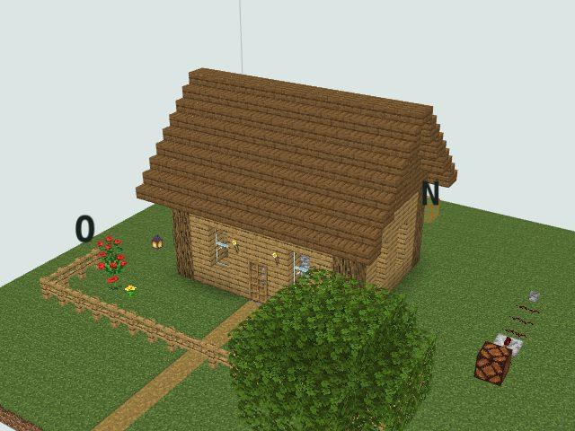
- O bloco vai para o lado da face apontada; no chão vazio, para a grade.
- Ao colocar, o bloco já fica como no jogo: frente virada para você, tronco seguindo a face clicada, laje e alçapão em cima ou embaixo conforme a metade clicada, tocha e placa presas na parede se clicadas na lateral (cap. 07).
- Laje sobre laje igual vira laje dupla.
- O clique acerta a forma real de lajes, escadas, cercas, muros, vidraças, portas, alçapões e tapetes: na metade vazia de uma laje de baixo o clique passa e pega o bloco de trás; no topo da laje, o bloco novo vai em cima dela. Plantas, tochas e outras peças finas usam uma caixa em volta delas, como no jogo, para não ficarem difíceis de acertar.
- Porta, cama, girassol e outras plantas altas ocupam dois blocos; se não couber, aparece um aviso.
Borracha de 1×1, 2×2 e 3×3
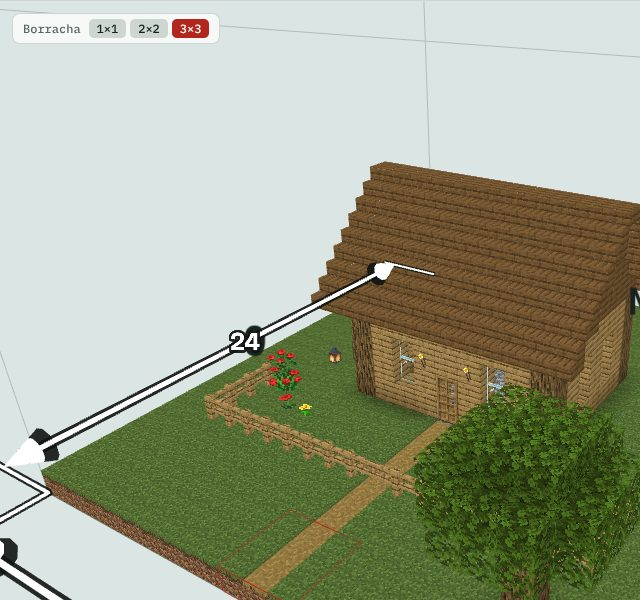
- Com a Borracha (ou o Pincel com Shift), um aviso no canto mostra os tamanhos 1×1, 2×2 e 3×3. O tamanho escolhido fica guardado.
- O quadrado fica na face clicada: no chão ou no teto apaga uma área deitada; numa parede, uma área de pé. A profundidade é sempre de um bloco.
- No 2×2, o quadrado vai para o lado da metade da face em que você clicou.
- Arrastar apaga uma faixa da largura escolhida.
Pincel de troca (máscara)
Para trocar um material por outro numa parte da construção sem mexer no resto, como trocar os tijolos de um trecho de parede por pedra sem tocar na pedra, no vidro ou no ar em volta:
- Escolha a ferramenta Pincel de troca (M) e ponha na hotbar o bloco novo (o destino).
- Com Shift, clique num bloco do tipo que deve sair: ele vira a máscara. O aviso no canto mostra “Troca máscara → destino”.
- Ajuste o raio (1 a 12, nos botões − e + do aviso ou nas teclas - e +) e a forma: Esfera ou Cubo.
- Passe o ponteiro: os blocos que vão mudar ficam destacados em laranja, dentro do contorno do volume. Clique ou arraste para pintar.
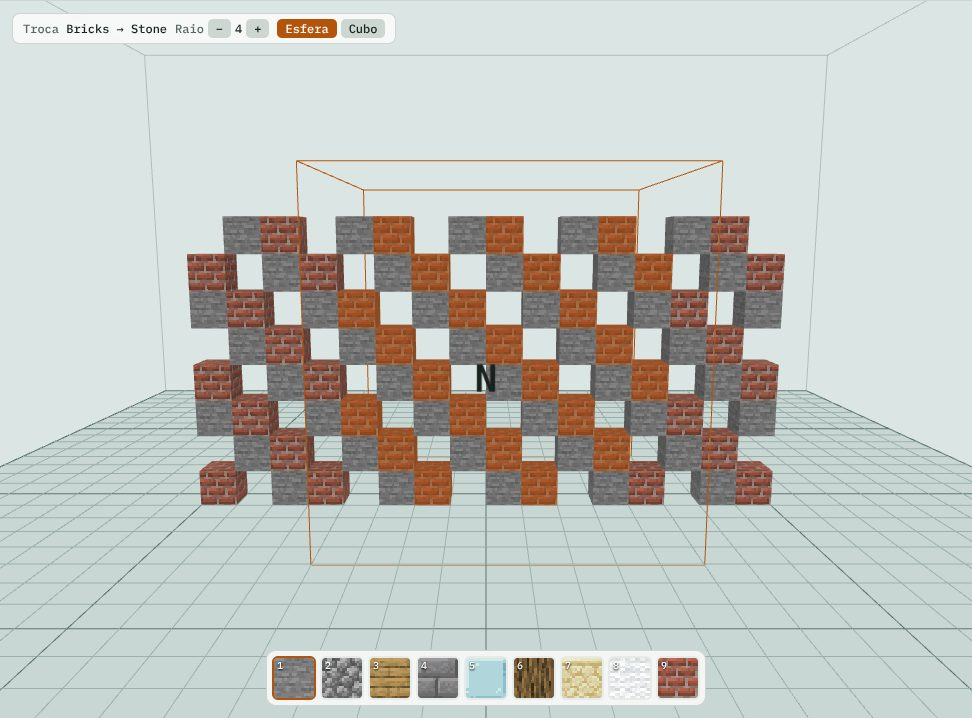
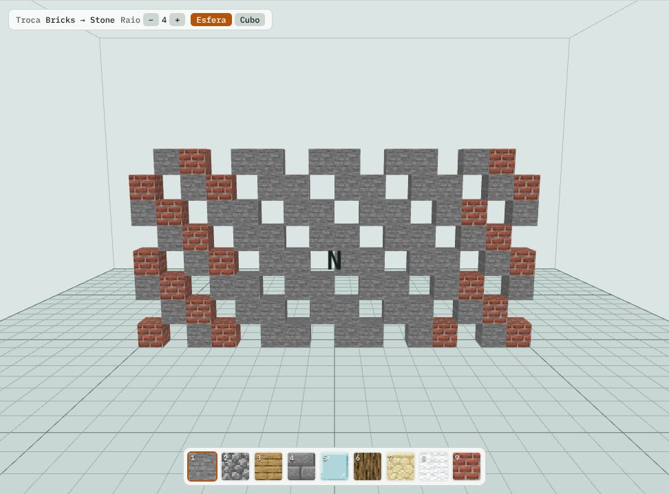
- O teste é pelo tipo do bloco: escada de carvalho é diferente de tábua de carvalho. Quando o destino tem as mesmas propriedades (escada por escada, tronco por tronco), a direção é mantida.
- O centro do volume é o bloco apontado pelo ponteiro (a partir da câmera). Com a Camada ligada, nada acima dela muda.
- Um traço inteiro (do clique até soltar) é um passo de Ctrl+Z; ao soltar, o aviso diz quantos blocos foram trocados.
- O raio e a forma ficam guardados no navegador; a máscara vale até você escolher outra.
- Apagar só um tipo de bloco: ponha o Air (apagar) na hotbar (categoria Técnicos e só Bedrock) e use-o como destino. Ex.: máscara Tijolos + Air apaga só os tijolos dentro do pincel, sem tocar no resto da construção. Ótimo para limpar um material de uma construção grande.
- Para trocar numa área retangular inteira de uma vez, use Selecionar → Substituir… (abaixo).
Pincel de mistura
Para dar uma textura variada e natural (pedra com andesito e pedregulho, caminho de terra com cascalho, parede velha com tijolos rachados e musgo) sem colocar bloco por bloco.
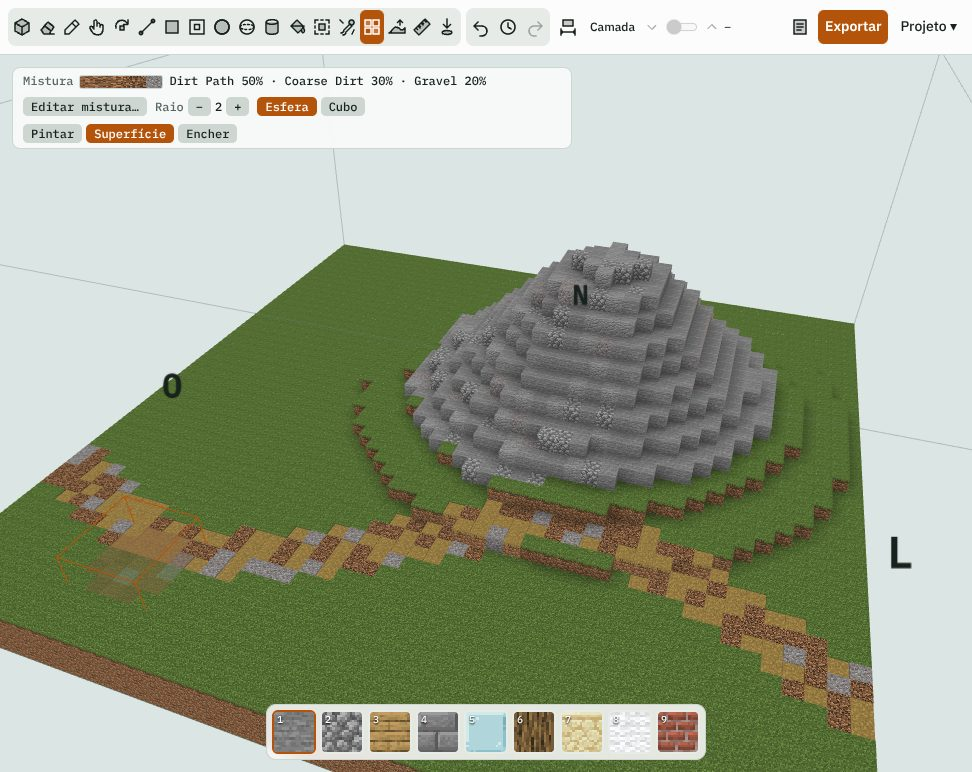
- Escolha a ferramenta Pincel de mistura (Q) e clique em Editar mistura… no aviso do canto.
- Monte a mistura: de 2 a 10 blocos, cada um com uma porcentagem (o número ou o controle deslizante). A soma tem de dar 100%: a janela mostra a soma, quanto falta ou sobra, e uma barra com a proporção de cada bloco. Ajustar para 100% mantém a proporção entre os números (3, 1 e 1 viram 60, 20 e 20); Dividir igualmente dá a mesma chance a todos. Há misturas prontas para começar (pedra velha, caminho de terra, chão de floresta, praia, montanha, neve, calçada, ruína, telhado gasto).
- Escolha o raio (0 a 16, nos botões − e + ou nas teclas - e +), a forma (Esfera ou Cubo) e o modo:
- Pintar: troca todos os blocos que existem dentro do pincel; o vazio fica vazio.
- Superfície: troca só os blocos com uma face no vazio, a “pele” do terreno ou da parede; o miolo não muda.
- Encher: põe blocos só nos espaços vazios, sem mexer no que já existe (uma bola ou um cubo misturado).
- Passe o ponteiro: os voxels que o pincel vai sortear aparecem já coloridos com um sorteio de amostra. Clique ou arraste para pintar.
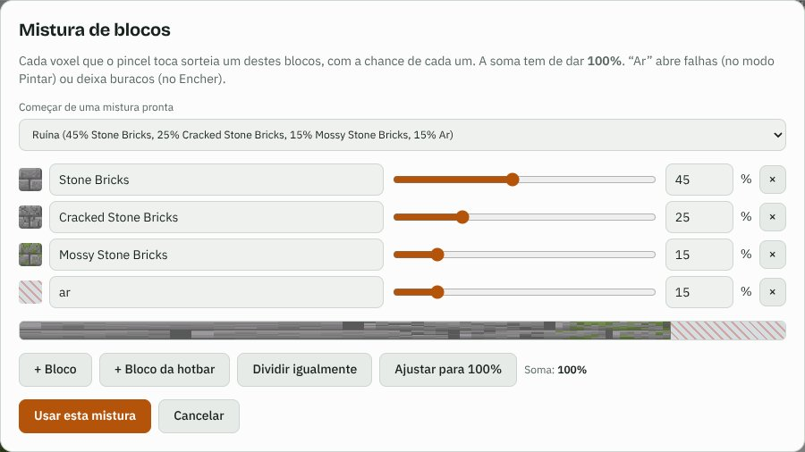
- Como sorteia: cada voxel tira um número de 0 a 100 e fica com o bloco em cuja faixa o número caiu (na mistura 60/30/10, de 0 a 60 é o primeiro, de 60 a 90 o segundo, de 90 a 100 o terceiro). Cada voxel sorteia sozinho, então em áreas grandes a conta fecha com as porcentagens (num teste com 12.893 blocos: 60,0%, 30,3% e 9,7% para 60, 30 e 10); em poucos blocos varia, como num dado.
- Num mesmo traço, cada voxel sorteia uma vez só: segurar o pincel parado não fica trocando os blocos. Para sortear de novo, solte e passe outra vez.
- Ar pode entrar na mistura: no Pintar e na Superfície, abre falhas (ruína, erosão); no Encher, deixa buracos.
- Escadas, lajes e troncos mantêm a direção quando o bloco sorteado tem as mesmas propriedades. Portas, camas e plantas altas (de duas partes) não entram na mistura.
- Ao soltar, o aviso conta quantos blocos saíram de cada tipo. O traço inteiro é um passo de Ctrl+Z (no histórico, “Pincel de mistura”). Com a simetria ligada, a cópia espelhada recebe os mesmos blocos; com a Camada ligada, nada acima dela muda.
- Shift + clique num bloco abre a janela com esse bloco já na lista (com 0%: dê a ele uma porcentagem).
- A mistura, o raio, a forma e o modo ficam guardados no navegador.
Pincel de bioma
O bioma decide a cor da grama, das folhas e da água, se chove ou neva e quais criaturas nascem. No site, ele é pintado por coluna (como no jogo, que guarda um bioma para cada x e z em cada altura) e vai junto quando o mundo é exportado: tanto numa área de um mundo do jogo quanto numa construção feita do zero. Ao pintar, o site já mostra a cor do bioma e, com Transformar o terreno ligado, troca o chão e faz nascer a vegetação do bioma.
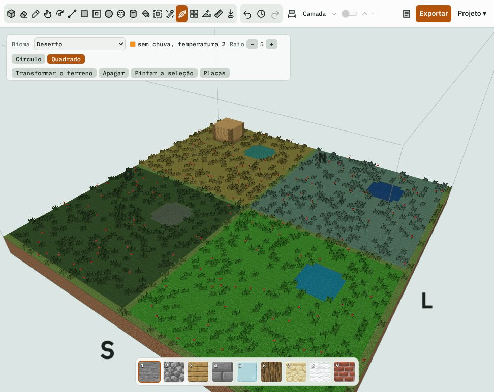
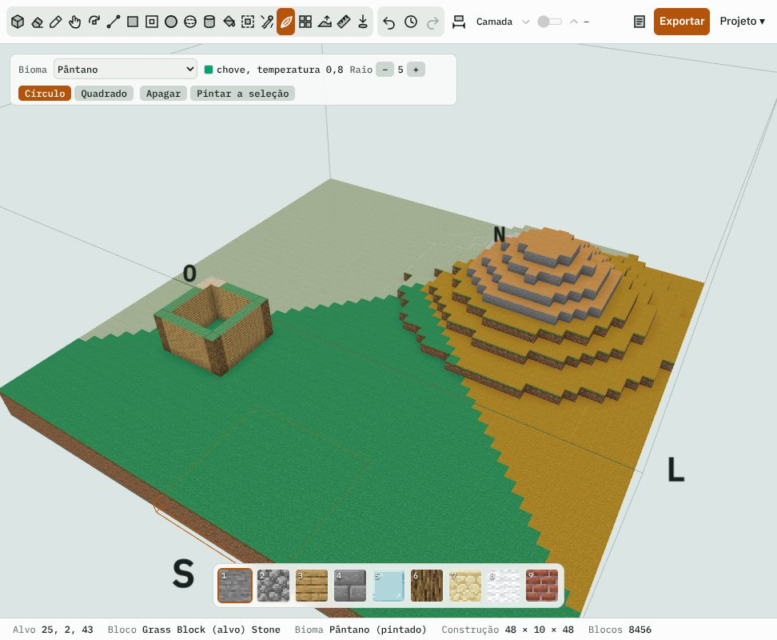
- Escolha a ferramenta Pincel de bioma (Y).
- No aviso do canto, escolha o bioma na lista (89 biomas do Bedrock 1.26, em grupos: superfície, água e praia, cavernas, Nether e End), o raio (0 a 32, nos botões − e + ou nas teclas - e +) e a forma (Círculo ou Quadrado).
- Deixe Transformar o terreno ligado (aceso) para o chão e a vegetação mudarem junto, ou desligue para trocar só o bioma (e a cor).
- Clique ou arraste sobre o chão. Apagar tira o bioma pintado (a coluna volta ao bioma original do mundo, ou fica sem bioma). Pintar a seleção pinta de uma vez todas as colunas da área marcada com Selecionar (V).
- Shift + clique pega o bioma da coluna clicada (conta-gotas).
- Um traço é um passo de Ctrl+Z (no histórico, “Pincel de bioma”). Os biomas são salvos no projeto (.json) e no navegador.
- Cor pelo bioma: a grama (o topo do bloco e o capim), as folhas de carvalho, selva, acácia, carvalho-escuro e mangue, o cipó e a água ficam com a cor do bioma da coluna, a mesma que o jogo usa (tirada dos arquivos do Bedrock 1.26). Folhas de abeto e de bétula têm cor fixa no jogo e não mudam. Colunas sem bioma ficam com a cor do pacote de texturas.
- No jogo não é preciso recolocar a grama: o jogo calcula a cor pelo bioma na hora de desenhar, então o mundo exportado já abre com as cores certas.
- Placas (no aviso do canto) ou Projeto → Mostrar biomas: uma placa colorida em cima de cada coluna, com a cor do bioma no mapa. Serve para ver os limites de cada bioma, inclusive em cima de pedra e construções.
- Transformar o terreno age só nas colunas que mudam de bioma e só no chão natural (grama, terra, areia, arenito, neve, terracota, lama, micélio, netherrack, pedra do End...) e nas plantas soltas (capim, flores, cactos, neve fina). Construções (tábuas, pedra, tijolos, vidro...) e troncos ficam como estão; debaixo de uma copa, só o chão muda. As árvores crescem com o mesmo gerador do Usar numa muda (cap. 03); as grandes (carvalho-escuro, abeto e árvore da selva gigantes) precisam de espaço 2 × 2. Tudo entra no mesmo passo de Ctrl+Z da pincelada, e o aviso no fim diz quantos blocos de chão, árvores, plantas e camadas de neve entraram.
- Numa área de um mundo do jogo, o site lê o bioma de cada coluna (o da altura do chão) e mostra na barra de status. Ao pintar, a coluna inteira recebe o bioma, do fundo ao céu (as cavernas embaixo deixam de ser cavernas exuberantes, por exemplo). Chunks que o jogo ainda não gerou não recebem bioma.
- Numa construção feita do zero, use Exportar → Exportar mundo novo (.mcworld) (cap. 11): é o único formato que leva os biomas. O .mcstructure e o .schem guardam só blocos.
- Conferido no servidor oficial do Bedrock (1.26): o jogo aceita o bioma pintado como se fosse natural. Num chunk de planície pintado de planície nevada, à noite nasceram errantes (esqueletos do frio, que só nascem em biomas gelados) só dentro dele. O mundo novo exportado abre com os blocos e os biomas no lugar.
- Não dá para criar pelo site as áreas de nascimento de estruturas (os saqueadores do posto avançado, as bruxas da cabana, os blazes da fortaleza, os guardiões do monumento): foi testado no servidor oficial copiando os registros dessas áreas de um posto avançado real para outro lugar, e lá não nasceu nenhum saqueador em dez rodadas, enquanto no posto real nasceram 30 no mesmo tempo. O jogo só aceita essas áreas quando foi ele que gerou a estrutura. Pintar pântano faz nascer o que o jogo faz nascer em qualquer pântano, não as bruxas da cabana.
| Biomas | Chão | O que nasce |
|---|---|---|
| Deserto | 3 de areia sobre 2 de arenito | Cactos de 1 a 3 blocos (sem nada encostado, como no jogo) e arbustos secos. |
| Terras áridas (mesa) | Areia vermelha sobre faixas de terracota coloridas (pela altura) | Arbustos secos e cactos raros. A versão com árvores tem terra grossa, grama e carvalhos. |
| Planície, planície de girassóis, prado | Grama sobre terra | Capim, flores (mais no prado) e um carvalho de vez em quando. |
| Florestas (comum, de bétulas, florida, carvalho-escuro, jardim pálido) | Grama sobre terra | Carvalhos e bétulas; bétulas; muitas flores; carvalhos-escuros 2 × 2 e cogumelos; carvalhos-pálidos 2 × 2 e musgo pálido. |
| Taiga, taiga gigante, bosque | Grama (na gigante, podzol e terra grossa) | Abetos (gigantes 2 × 2 na taiga gigante), samambaias e arbustos de frutas doces. |
| Selva, borda da selva, selva de bambu | Grama (na de bambu, com podzol) | Árvores da selva (algumas gigantes), samambaias, melancias; touceiras de bambu de 4 a 11 blocos. |
| Savana, colinas, cerejal | Grama sobre terra | Acácias e capim; abetos e carvalhos espaçados; cerejeiras e pétalas rosadas. |
| Pântano, mangue | Grama; no mangue, lama | Carvalhos com cipó, orquídeas azuis e vitórias-régias na água; mangues. |
| Biomas com neve (planície nevada, taiga nevada, praia nevada...) | O do bioma | Neve fina por cima do chão e gelo na superfície da água; na planície de espinhos, blocos de neve e torres de gelo compactado. |
| Picos e encostas | Blocos de neve, neve fofa, gelo compactado, pedra e calcita | — |
| Praias, rios e oceanos | Areia (praias, oceanos quentes), areia e argila (rios), cascalho (oceanos frios) ou pedra (costa de pedra) | — |
| Campos de cogumelos | Micélio | Cogumelos e cogumelos gigantes. |
| Nether | Netherrack; nílio carmesim ou distorcido; areia e terra das almas; basalto e pedra-negra | Fungos gigantes, raízes e brotos nas florestas. |
| End | Pedra do End | — |
| Biomas de caverna | Só o bioma (o terreno não muda). | |
Esculpir terreno
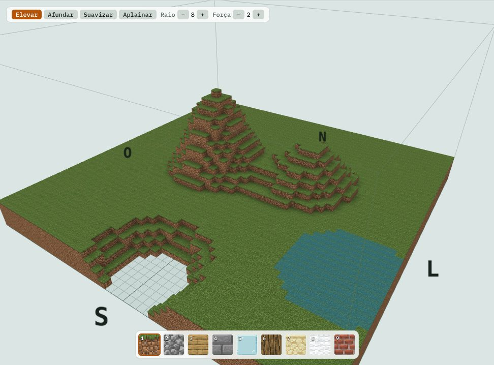
Em vez de pôr bloco por bloco, o Esculpir terreno (K) trata o chão como um mapa de alturas e o deforma de forma gradual: segure o botão e o terreno vai subindo (ou descendo) aos poucos, mais no centro e quase nada na borda do pincel.
| Modo | O que faz |
|---|---|
| Elevar | Ergue o chão em forma de morro arredondado. Os blocos novos são o bloco da hotbar (escolha grama para um morro natural); a grama que fica coberta vira terra. |
| Afundar | Abaixa o chão, abrindo vales e buracos. A grama do topo desce junto. |
| Suavizar | Aproxima cada coluna da média das vizinhas: arredonda degraus, picos e paredões. |
| Aplainar | Leva o chão à altura do ponto onde o traço começou: bom para abrir um platô para construir. |
- Raio (1 a 16, também nas teclas - e +) e Força (1 a 5) ficam no aviso do canto e guardados no navegador.
- O efeito segue uma curva suave: no centro, a força inteira; perto da borda, quase nada. Segurar mais tempo aumenta o efeito; arrastar espalha.
- Com Shift, Elevar vira Afundar (e o contrário) só naquele traço.
- O pincel mexe no bloco mais alto de cada coluna: se houver uma construção dentro do raio, ela também sobe ou desce. Use a Camada para limitar a altura.
- Um traço inteiro é um passo de Ctrl+Z.
Simetria (espelho)
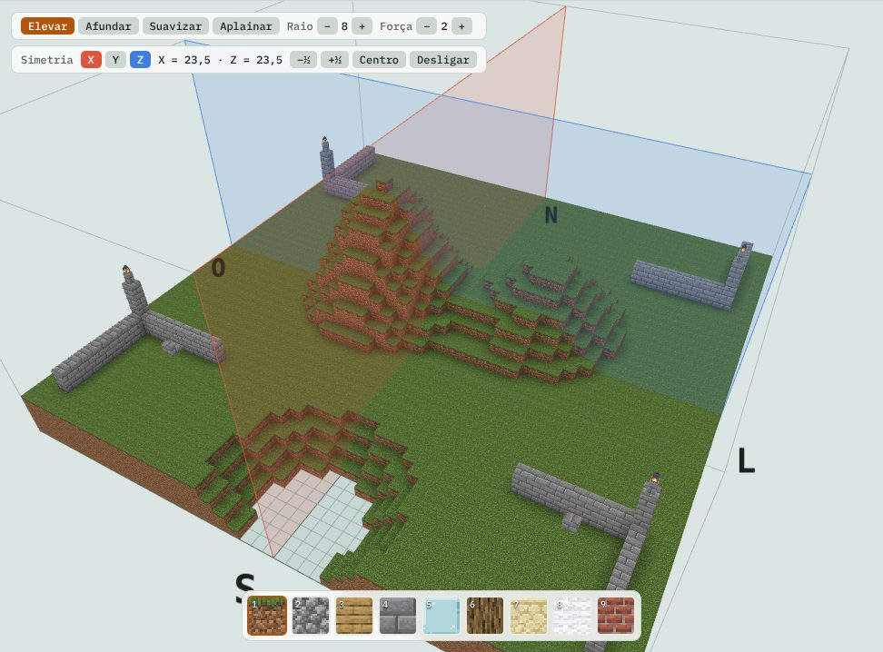
- Ligue em Projeto → Simetria (espelho) ou com X. No aviso do canto, escolha os eixos: X (plano vermelho, espelha leste e oeste), Z (azul, norte e sul) e Y (verde, em cima e embaixo). Dá para ligar mais de um: com X e Z, cada bloco aparece quatro vezes.
- Tudo o que muda blocos é espelhado na hora: pincel, borracha, formas, colar, substituir, pincel de troca, esculpir, preencher o chão, árvores e água colocada.
- O estado também espelha: escada, fornalha e porta viram para o lado oposto, a dobradiça da porta troca de lado e, no espelho de altura, laje e escada ficam de cabeça para baixo.
- Posição do plano: Centro põe no meio do espaço; −½ e +½ movem meio bloco; P põe o plano no bloco apontado (apertar de novo põe entre ele e o vizinho). Com o plano no meio de um bloco, a construção fica com um bloco central; entre dois blocos, com número par de blocos.
- Desfazer volta o original e as cópias de uma vez. Desligar (ou X de novo) tira os planos.
Formas: linha e caixas com altura
- Linha, Caixa sólida e Caixa oca têm três cliques: o primeiro marca o início, o segundo o ponto oposto (a base) e o terceiro a altura. Depois do segundo clique, suba ou desça o ponteiro: a prévia cresce para cima (ou para baixo) e o terceiro clique confirma. O ponteiro pode sair de cima do chão e da caixa do espaço (subir para o céu da tela): a altura continua acompanhando, até o teto do espaço.
- Para uma caixa achatada (um piso), clique o terceiro sem subir o ponteiro.
- Para uma linha de pé (de baixo para cima), clique duas vezes no mesmo ponto e suba o ponteiro. Se o segundo ponto for longe, a linha sai inclinada até a altura escolhida.
- Esferas continuam com dois cliques: o centro e um ponto da borda.
- Enquanto a forma está sendo desenhada, medidas temporárias mostram o tamanho da prévia: largura, profundidade e altura da caixa, o comprimento da linha em blocos e o diâmetro da esfera. Elas somem ao colocar os blocos ou cancelar, e aparecem mesmo com o botão Medidas desligado.
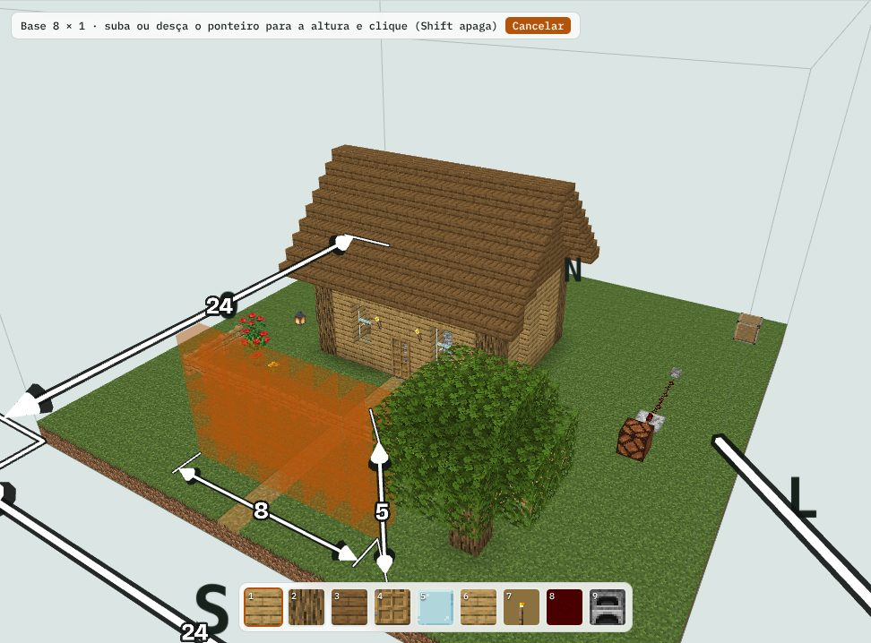
Mais formas: cilindro, cone, pirâmide, cúpula, arco e arestas
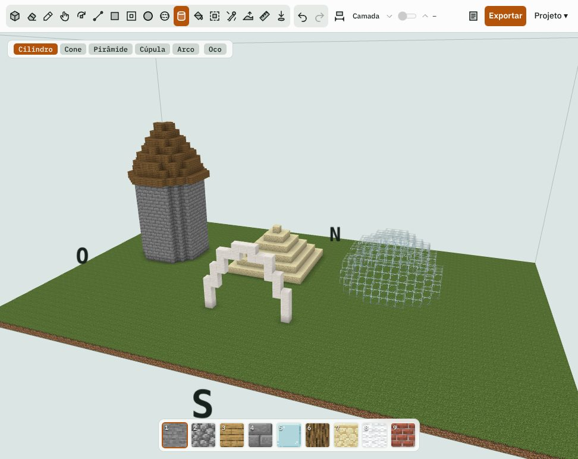
- A ferramenta Mais formas (C, o cilindro na barra) desenha a forma escolhida no aviso do canto, com o bloco da hotbar. Como nas outras formas, há prévia laranja, medidas temporárias, Shift no último clique apaga e Esc cancela.
- Cilindro e Cone: três cliques. O centro da base, um ponto da borda (a distância é o raio) e a altura (suba o ponteiro, como na caixa). O cone afina até a ponta.
- Arco: três cliques. Um pé, o outro pé (na mesma linha, em X ou em Z) e a altura do topo. Sai um arco de 1 bloco de espessura, em meia elipse, com os blocos encostados face com face.
- Pirâmide: dois cliques, os cantos da base. Cada camada recua um bloco de cada lado até fechar, então a altura sai sozinha.
- Cúpula: dois cliques, o centro e um ponto da borda. É meia esfera, para cima.
- Arestas: três cliques, como a caixa (dois cantos da base e a altura), mas sai só o esqueleto: as 12 arestas da caixa. Com uma das medidas igual a 1 (uma caixa achatada, de pé ou deitada), vira uma moldura: o contorno de um retângulo.
- Oco: o cilindro vira um tubo sem tampas (uma torre); cone, pirâmide e cúpula viram só a casca, sem chão. Não vale para arco e arestas, que já são finos. A escolha da forma e do Oco fica guardada.
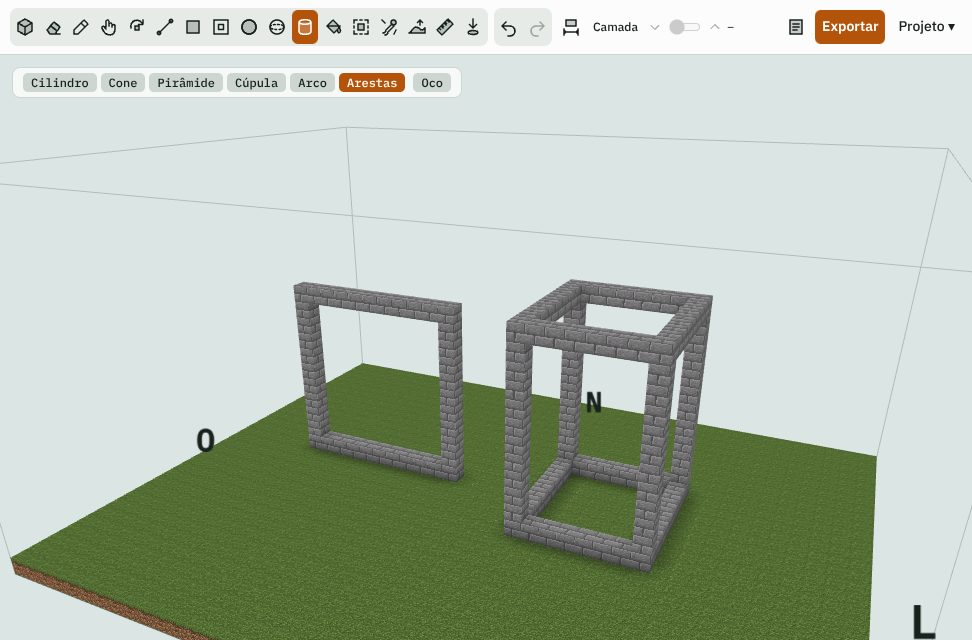
Balde: encher uma área fechada
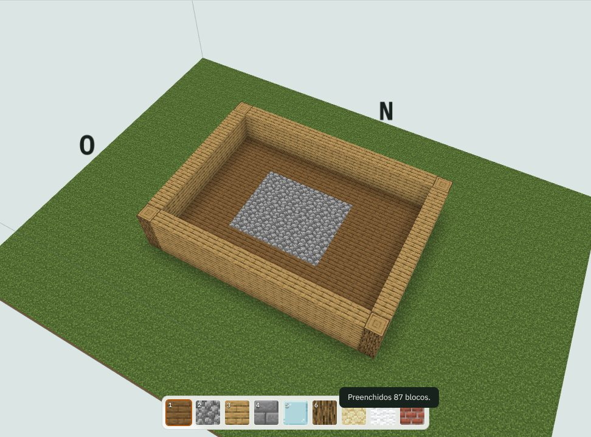
- Escolha o Balde (F) e clique num bloco: o espaço vazio ligado à face clicada é enchido com o bloco da hotbar até bater nos blocos, como o balde de tinta de um programa de desenho.
- Ele enche no plano da face clicada: clicando no chão, enche a camada logo acima (o piso de uma sala); clicando numa parede, enche o plano encostado nela (uma janela fechada por moldura, por exemplo).
- Só enche áreas fechadas. Se o vazio escapa pelos lados (uma porta aberta, uma parede incompleta), nada é feito e um aviso explica: feche a abertura e tente de novo.
- Shift + clique num bloco: troca a região ligada daquele mesmo bloco (no mesmo plano) pelo bloco da hotbar. Ex.: trocar um piso de terra inteiro por tábuas.
- Um clique é um Ctrl+Z. A simetria repete o balde do outro lado; com a Camada ligada, ele não passa da altura do corte. Até 4 milhões de blocos por vez.
Selecionar, copiar e colar
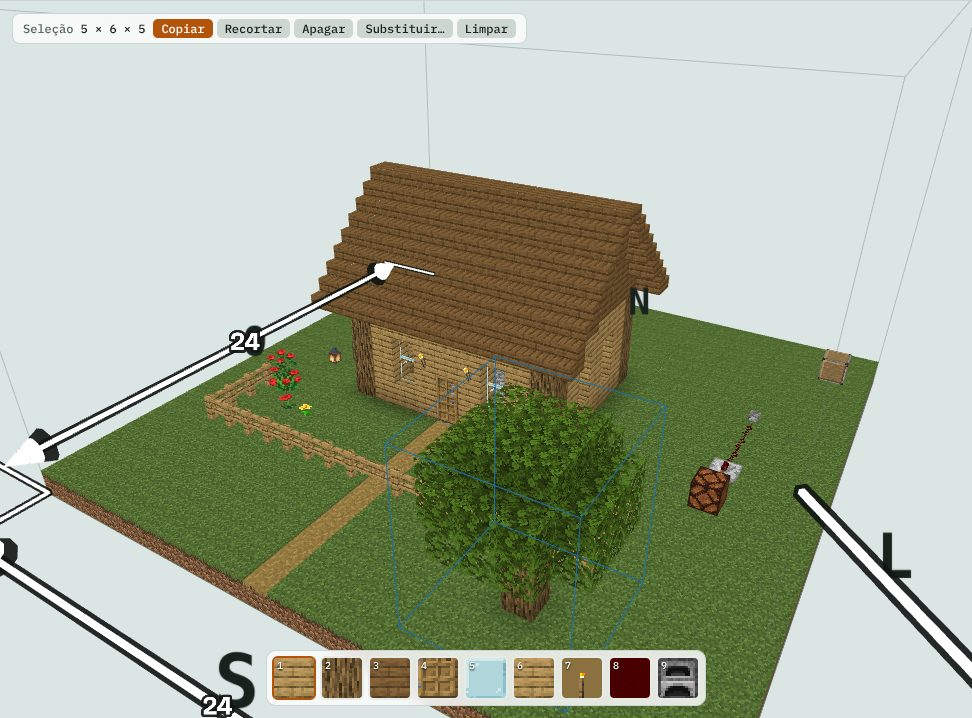
| Ação | Botão no aviso | Tecla | O que faz |
|---|---|---|---|
| Mover | ↑ ↓ ← → ▲ ▼ | Setas, Page Up / Page Down | Leva os blocos da área (e a caixa da seleção junto) um bloco para a frente, para trás, para os lados, para cima ou para baixo. Com Shift, cinco blocos de cada vez. Veja abaixo. |
| Copiar | Copiar | Ctrl+C | Guarda os blocos da área, com direção e estado (porta aberta, escada virada, laje em cima…). |
| Recortar | Recortar | Ctrl+X | Copia e apaga a área. |
| Colar | Colar | Ctrl+V | Uma prévia azul da cópia segue o mouse, centrada no ponto apontado e apoiada nele. Cada clique cola uma cópia; Esc, Cancelar ou um clique simples com o botão direito terminam. |
| Girar a cópia | Girar 90° | R (colando) | Gira a cópia 90° no sentido horário, visto de cima. Os blocos giram junto: escadas, portas, troncos deitados, trilhos, placas. |
| Guardar com nome | Salvar na biblioteca | — | Guarda a construção da área na biblioteca deste navegador, para colar depois em qualquer projeto ou mundo (veja abaixo). |
| Espelhar a cópia | Espelhar ↔ / Espelhar ↕ | F / Shift+F (colando) | Vira a cópia como num espelho: ↔ troca leste e oeste, ↕ troca norte e sul. Os blocos viram junto (escadas, portas com a dobradiça do outro lado), pela mesma regra da simetria. Combine com Girar 90° para qualquer posição. |
| Apagar | Apagar | Delete | Apaga todos os blocos da área. |
| Substituir | Substituir… | — | Troca um tipo de bloco (ou todos) por outro só dentro da área (veja abaixo). |
| Limpar | Limpar | Esc | Tira a seleção. A cópia continua guardada. |
- O ar copiado não apaga nada: ao colar, só os blocos da cópia entram, o que já existe nos espaços vazios fica.
- O que sairia do espaço não é colado, e o aviso diz quantos blocos ficaram de fora.
- Cada colagem, recorte, apagamento ou substituição é um passo de Ctrl+Z.
- A cópia vale para o projeto aberto depois: dá para copiar de uma estrutura importada e colar num projeto novo, sem recarregar a página.
- No celular, use os botões do aviso no lugar das teclas.
Mover a área selecionada
- Com a área marcada, a linha Mover do aviso tem seis setas: ↑ frente, ↓ trás, ← esquerda, → direita, ▲ sobe e ▼ desce. No teclado (com a ferramenta Selecionar escolhida), as setas e Page Up / Page Down fazem o mesmo; com Shift (tecla ou clique), anda 5 blocos.
- Frente, trás e lados seguem a câmera: “frente” é o lado para onde você está olhando (o eixo X ou Z mais perto), como as setas que movem a câmera. Ao girar a câmera, as setas giram junto.
- A caixa da seleção vai junto com os blocos, então dá para apertar várias vezes seguidas. Cada passo é um Ctrl+Z (que traz a caixa de volta também).
- Os blocos movidos ocupam o lugar novo, trocando o que estiver lá; o ar da seleção não apaga nada. Direção e estado (escadas, portas) vão iguais, e cercas e muros se religam aos vizinhos novos.
- Não move se a área sairia do espaço (o aviso explica). A água movida não escorre no caminho.
- Com a simetria ligada, a área espelhada (do outro lado de cada plano) anda junto: no eixo do espelho, para o lado oposto (se a seleção vai para o leste, o espelho vai para o oeste); nos outros eixos, para o mesmo lado. Os blocos dela são os que estão lá de verdade, não uma cópia da seleção. Se a seleção cruza o plano e o movimento é no eixo do espelho, só a seleção anda (um aviso explica).
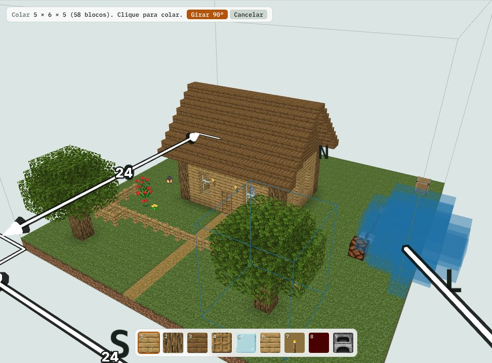
Biblioteca de construções
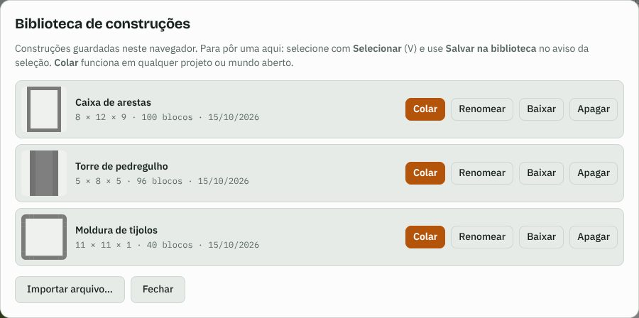
- Guardar: selecione a construção com Selecionar (V) e clique em Salvar na biblioteca no aviso da seleção. Dê um nome e pronto. Só os blocos entram (o ar da seleção não).
- Usar: Projeto → Biblioteca de construções… e Colar. A construção vira a cópia do colar: a prévia segue o mouse, cada clique cola, R gira e F espelha.
- A biblioteca fica neste navegador, separada do projeto: continua depois de recarregar a página, de usar Novo, de abrir outro projeto ou outro mundo do jogo. Dá para guardar uma casa num projeto e colar dentro de um mundo, por exemplo.
- Baixar gera um arquivo
.biblioteca.json; Importar arquivo… traz de volta. Serve para levar construções para outro navegador ou para o celular, ou para guardar uma cópia de segurança. - Renomear e Apagar (pede um segundo clique) organizam a lista. A miniatura mostra a construção pelo lado mais largo.
- Blocos do jogo que o editor não conhece (os roxos, de um mundo aberto) vão junto e voltam iguais quando colados com um mundo do jogo aberto. Sem mundo aberto, eles ficam de fora (um aviso diz quantos).
Substituir blocos na seleção
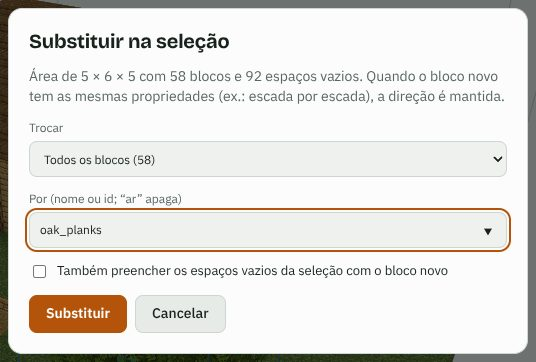
- Trocar: “Todos os blocos” ou um dos tipos que existem na área, com a quantidade de cada um.
- Por: o bloco novo. Comece a digitar o nome ou o id (ex.:
stone_bricks) e escolha na lista; já vem preenchido com o bloco ativo da hotbar. Escrevaarpara apagar só aquele tipo. - Quando o bloco novo tem as mesmas propriedades, a direção e o estado são mantidos: escada de carvalho vira escada de pedra virada para o mesmo lado, tronco deitado vira outro tronco deitado.
- Também preencher os espaços vazios: além de trocar, enche todo o ar da área com o bloco novo. Com essa opção, a seleção vira também uma ferramenta de preencher.
Usar e Girar
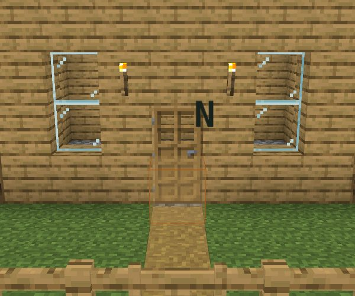
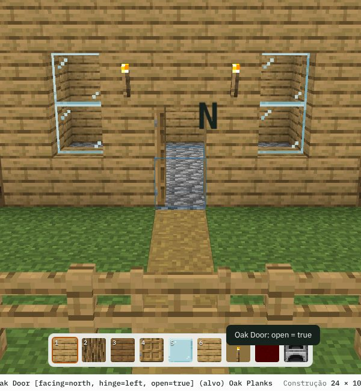
open = true.Árvores que crescem
Coloque uma muda e clique nela com Usar (U): ela vira a árvore inteira, como com farinha de osso no jogo. Cada uso sai com altura e copa um pouco diferentes; se não gostar, Ctrl+Z e use de novo.
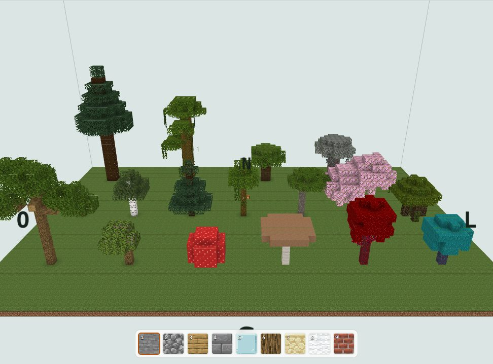
| Muda | Vira | Com Shift ou 4 mudas em quadrado |
|---|---|---|
| Carvalho | Carvalho de copa redonda (às vezes o grande, como no jogo) | Shift: carvalho grande com galhos |
| Bétula | Bétula | Shift: bétula alta |
| Abeto | Abeto em cone | Shift: pinheiro (copa só no alto); 4 mudas: abeto gigante 2 × 2 |
| Selva | Árvore da selva com cipós e cacau | Shift: mais alta; 4 mudas: árvore da selva gigante com galhos |
| Acácia | Tronco torto e copa achatada, às vezes com dois galhos | — |
| Carvalho-escuro e carvalho-pálido | Só crescem com 4 mudas em quadrado, como no jogo; o pálido tem musgo pendurado | — |
| Cerejeira | Galhos tortos e copa cor-de-rosa larga | — |
| Propágulo de mangue | Mangue com raízes que entram na terra e propágulos pendurados (o propágulo pendurado não cresce) | — |
| Azaleia e azaleia florida | Árvore de azaleia com folhas floridas e terra enraizada embaixo | — |
| Cogumelo vermelho e marrom | Cogumelo gigante (chapéu em domo ou achatado) | Shift: com o caule alto |
| Fungo carmesim e distorcido | Fungo gigante do Nether com luz-cogumelo; o carmesim tem vinhas penduradas | Shift: o alto |
- Como no jogo, o tronco precisa de espaço livre: se houver um bloco no caminho, ou se faltar altura no espaço, aparece um aviso e nada muda. As folhas só ocupam o ar (e plantinhas como grama), sem apagar nada que você construiu.
- O bloco de grama embaixo do tronco vira terra, como no jogo.
- A árvore inteira é um passo de desfazer.
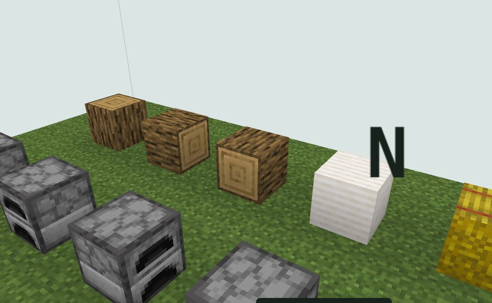
Histórico: linha do tempo com ramos
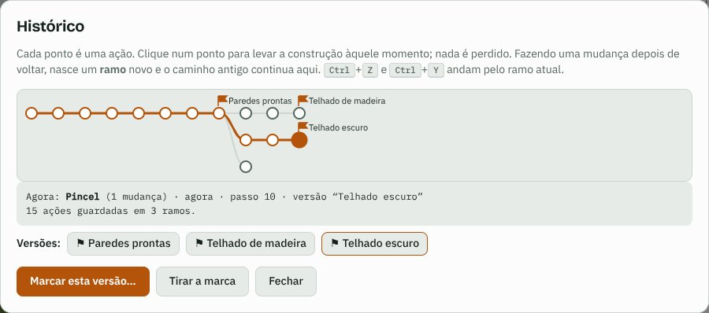
- O relógio entre desfazer e refazer (ou Projeto → Histórico) abre a linha do tempo. Cada ponto é uma ação: um traço de pincel, uma forma, colar, mover, balde, substituir, uma árvore… O ponto cheio é o momento atual; o caminho até ele fica destacado. Passando o mouse num ponto, aparece o nome da ação, quantos blocos mudou e quando.
- Clique em qualquer ponto para levar a construção àquele momento, para trás ou para a frente, em qualquer ramo. Nada é apagado: dá para voltar ao ponto de onde saiu.
- Depois de voltar, uma mudança nova abre um ramo (uma linha embaixo) em vez de jogar fora o que vinha depois. Assim dá para testar duas ideias do mesmo ponto e trocar entre elas com um clique.
- Marcar esta versão… dá um nome ao ponto atual (aparece com uma bandeirinha). As versões marcadas ficam em botões embaixo da linha do tempo, para pular direto a elas; Tirar a marca remove o nome.
- Ctrl+Z volta um ponto; Ctrl+Y avança pelo último ramo visitado.
- A linha do tempo é salva junto com a construção e volta ao recarregar a página. Abrir outro projeto, começar um novo ou mudar o tamanho do espaço começa uma linha do tempo nova.
04Câmera e navegação
| Ação | Mouse | Teclado | Toque |
|---|---|---|---|
| Girar a vista | Arrastar com o botão direito | — | Arrastar com um dedo |
| Mover a vista | Botão do meio, ou Shift + botão direito | Setas | Dois dedos |
| Zoom | Roda | — | Pinça com dois dedos |
| Recentralizar | — | Home | — |
| Teleporte | Ferramenta Teleporte, clique num bloco | J e clique | Toque num bloco |
| Grade do chão | Projeto → Mostrar/ocultar grade | G | Menu Projeto |
Um clique simples com o botão direito (sem arrastar) cancela uma forma em andamento. A bússola no chão mostra Norte, Sul, Leste e Oeste; elas são as mesmas direções do jogo, então uma porta virada para o norte aqui fica virada para o norte no mundo (em relação à posição em que a estrutura é carregada). Em espaços grandes, as letras crescem e o zoom afasta mais.
Teleporte (J, o último ícone das ferramentas): clique num bloco e a câmera desliza até ele em menos de meio segundo, ficando em cima dele e mais perto (até 16 blocos de distância), com o mesmo ângulo de antes. Serve para atravessar uma construção ou uma área grande do mundo sem arrastar a vista. Clicando no vazio, vai para o ponto do chão apontado. Um aviso mostra as coordenadas (as do jogo, com um mundo aberto). Home volta à vista geral.
Primeira pessoa: andar dentro da construção
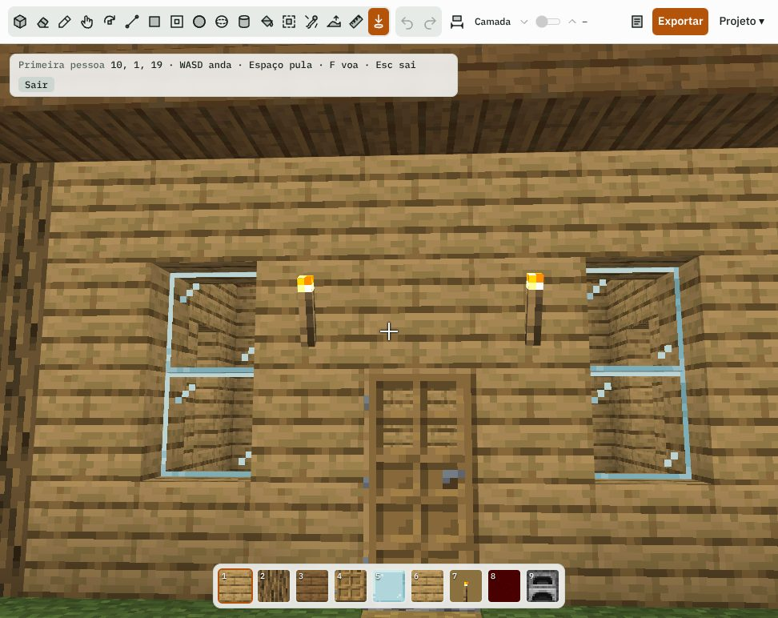
- Entrar: com o Teleporte (J), Shift + clique num bloco (você aparece em cima dele), ou o botão Primeira pessoa do aviso do Teleporte (aparece no ponto para onde a câmera está olhando).
- O mouse fica preso na tela e gira a visão. W A S D anda, Espaço pula. F liga e desliga o voo: voando, Espaço sobe e Shift desce.
- O jogador bate nos blocos como no jogo (1,8 de altura, 0,6 de largura) e sobe degraus de 1 bloco sozinho. Escada de mão, trepadeira e andaime sobem com Espaço ou W; na água, Espaço nada para cima. Portas, alçapões, portões, plantas, tochas e afins deixam passar.
- Também dá para construir como no jogo: clique esquerdo quebra, direito coloca o bloco da hotbar e o botão do meio pega o bloco apontado (alcance de 8 blocos). A roda do mouse e 1…9 trocam o bloco. Cada clique é um Ctrl+Z.
- Esc (ou Sair no aviso) volta à câmera normal, girando em volta de onde você estava. Com a Camada ligada, nada acima do corte existe para o jogador.
05Camada
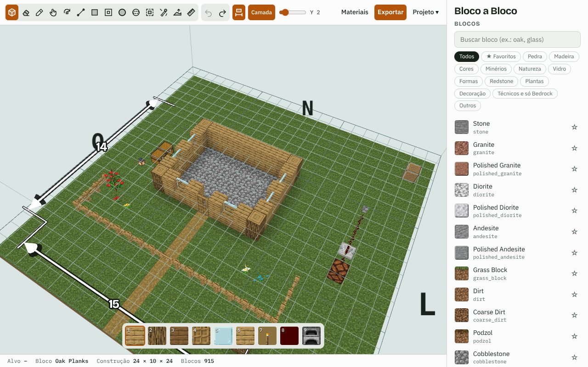
- O botão Camada liga o corte; a altura aparece em número ao lado.
- As setas dos dois lados do controle descem (▼) e sobem (▲) uma camada por clique; o controle deslizante pula direto para uma altura. No teclado, [ desce e ] sobe (ligando o corte se estiver desligado).
- Com o corte ligado, as ferramentas só agem até essa altura, e o chão de colocação passa a ser a camada. Serve para fazer andares, pisos e interiores sem o telhado atrapalhar.
- Nada é apagado: desligar o corte mostra tudo de novo.
- Fantasma: com a Camada ligada aparece o aviso Fantasma. Ligado, ele mostra em azul translúcido, na altura da camada atual, os blocos de uma camada de baixo, como papel vegetal sobre a planta do andar de baixo. Assim dá para alinhar as paredes do andar de cima com as de baixo mesmo com o piso no meio. − e + escolhem qual camada serve de referência (começa 1 abaixo; para pular o piso, use 2). Onde você já construiu, o fantasma some. A escolha fica guardada.
- Com as medidas ligadas, a Camada mostra o contorno dos blocos daquela altura com a medida de cada lado, como numa planta baixa (cap. 08).
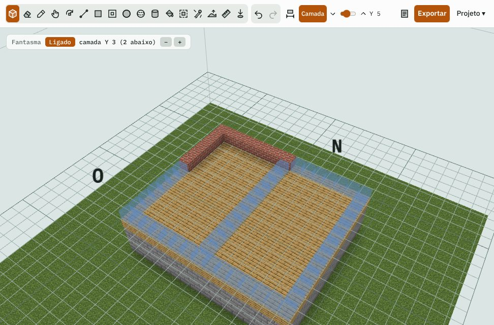
06Paleta e hotbar
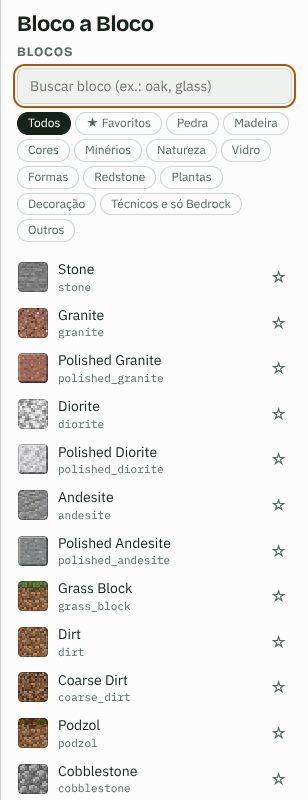
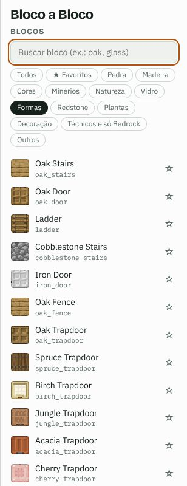
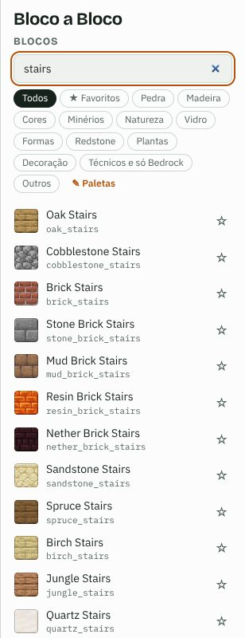
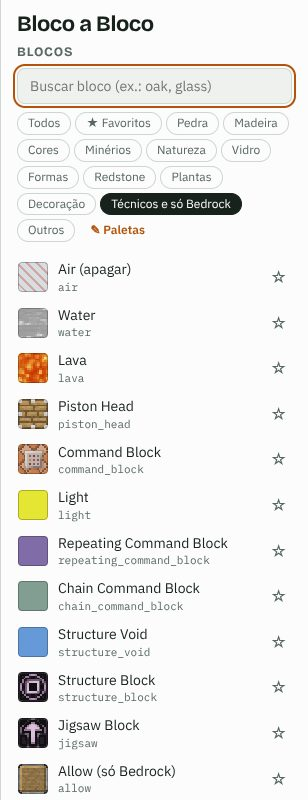
- Busca: por nome em inglês ou id do Minecraft, com várias palavras (ex.:
oak stairs). Combina com a categoria escolhida. - Escolher: clicar (ou Enter com o item em foco) põe o bloco no espaço ativo da hotbar.
- Favoritos: a estrela marca; a categoria ★ Favoritos mostra só os marcados. Ficam guardados no navegador.
- Amostras: com pacote carregado, cada bloco mostra a textura (a frente, nos blocos com frente); sem pacote, a cor média.
Paletas próprias e edição das paletas do site
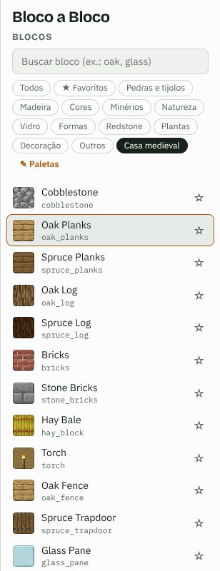
- O aviso ✎ Paletas, no fim das categorias (ou Projeto → Paletas de blocos…), abre a janela das paletas.
- Nova paleta…: dê um nome e marque os blocos. A busca filtra a lista; Marcar os da busca põe todos os achados de uma vez (ex.: busque
spruce); Pôr os blocos da construção põe todos os blocos usados no projeto aberto; Só os escolhidos mostra só os marcados. - Editar funciona também nas paletas do site: mude o nome, tire ou ponha blocos. Excluir some com a paleta (as do site voltam com Trazer de volta). As setas ↑ e ↓ mudam a ordem dos avisos.
- Restaurar as do site desfaz todas as mudanças nas paletas do site (nomes, blocos, ordem e as excluídas); as suas continuam.
- As paletas ficam no navegador e valem para qualquer projeto ou mundo. Baixar gera
paletas.json; Importar… traz esse arquivo em outro aparelho. - As paletas próprias aparecem com a borda tracejada. Todos fica sempre em primeiro e não muda; Favoritos é feito com as estrelas.
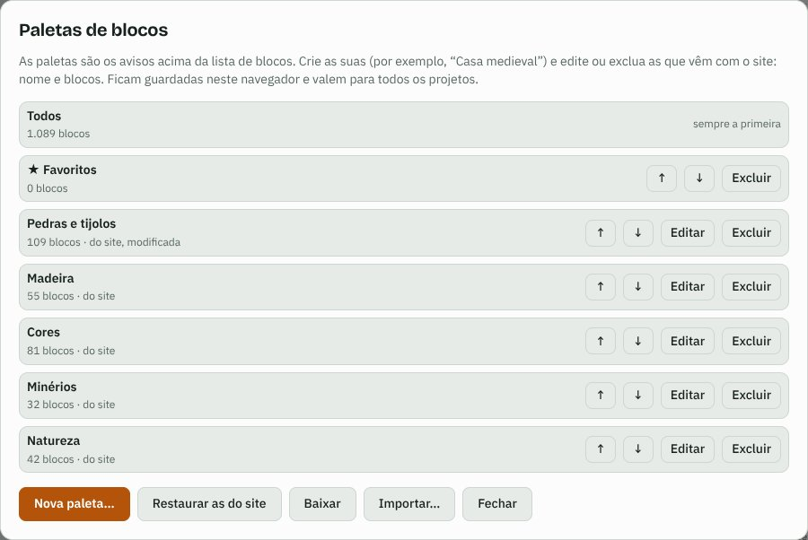
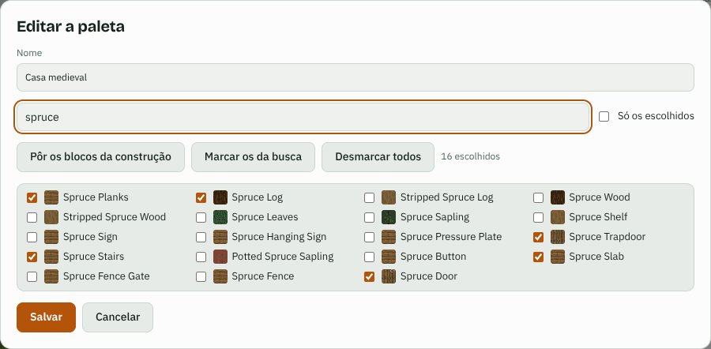
| Paleta do site | O que tem | Blocos |
|---|---|---|
| Pedra | Pedras, tijolos, ardósia, quartzo, prismarinho, cobre, enxofre, cinábrio… | 117 |
| Madeira | Tábuas, troncos, madeiras, caules, bambu, choupo | 60 |
| Cores | Lã, concreto, terracota e terracota esmaltada | 81 |
| Minérios | Minérios e blocos de metal e gema | 32 |
| Natureza | Terra, grama, areia, cascalho, folhas, gelo, musgo… | 42 |
| Vidro | Vidros, gelo translúcido, slime, mel | 21 |
| Formas | Escadas, lajes, muros, cercas, portões, portas, alçapões, vidraças, barras, tapetes, escada de mão, andaime, correntes; lajes e escadas de lã e de concreto | 355 |
| Redstone | Pó, repetidor, comparador, alavanca, botões, placas de pressão, trilhos, pistões, linha de armadilha, TNT… | 60 |
| Plantas | Flores, mudas, plantações, cogumelos, corais, cipós, folhagens, folhas de choupo | 167 |
| Decoração | Camas, baús, placas, estandartes, cabeças, lanternas, bolo, bigorna, caldeirão, velas, moldura do portal do Fim, estante entalhada, núcleo pesado, geradores de monstros e de desafios, cofre, estátua do golem de cobre, molduras… | 218 |
| Técnicos e só Bedrock | Ar (para apagar), blocos de comando, estrutura, quebra-cabeça, luz, água, lava, barreira, coluna de bolhas, gelo de geada, blocos infestados e os blocos técnicos que só existem no Bedrock | 33 |
| Outros | O que não se encaixa acima (estantes, mesas de trabalho, blocos especiais) | 43 |
Hotbar
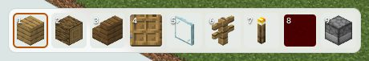
07Os blocos
São 1.150 blocos ao todo: 385 cubos inteiros e 765 formas (dos quais 62 são variantes de parede que o editor usa sozinho). Os nomes aparecem em inglês, como no jogo em inglês e nos comandos.
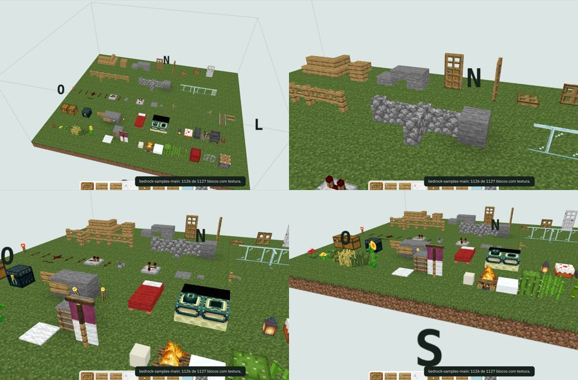
| Comportamento | Como funciona |
|---|---|
| Direção ao colocar | Escada, porta, portão e cama ficam virados para onde você olha. Baú, fornalha, abóbora entalhada, repetidor, comparador e afins ficam de frente para você. Dispensador, liberador, barril e pistão também apontam para cima ou para baixo; o observador olha para longe de você. Troncos e colunas seguem o eixo da face clicada. |
| Metade clicada | Laje, escada e alçapão ficam em cima ou embaixo conforme a metade da face clicada (ou se você clicou embaixo de um bloco). |
| Variante de parede | Tocha, tocha de redstone, placa, placa pendurada, estandarte, cabeça e leque de coral clicados na lateral de um bloco viram a versão de parede. |
| Chão, teto e parede | Botão, alavanca, rebolo e sino mudam conforme a face: chão, teto ou parede. Lanterna clicada embaixo fica pendurada. |
| Placas em 16 posições | Placa, estandarte e cabeça no chão giram em passos de 22,5°, de frente para você. |
| Conexões automáticas | Cercas, muros, vidraças e barras se ligam aos vizinhos e aos blocos sólidos; portões encaixam no muro. O pó de redstone se liga a componentes e sobe degraus; sozinho, vira cruz. Escadas fazem cantos em L. Dois baús iguais lado a lado viram baú duplo. A linha de armadilha prende nos ganchos. |
| Dois blocos | Porta, cama e plantas altas (girassol, roseira, lilás, peônia, capim alto) são colocadas, giradas, usadas e apagadas como uma peça só. |
| Laje dupla | Pôr a mesma laje sobre a face de cima de uma laje de baixo (ou embaixo de uma de cima) junta as duas. |
| Blocos que mudam com Usar | Aberto/fechado, ligado/desligado, aceso/apagado, idade das plantações, pedaços do bolo, número de velas, picles do mar, camadas de neve, atraso do repetidor, modo do comparador, olho na moldura do portal do Fim, carga da âncora, nível de água, lava e luz. Mudas, cogumelos e fungos crescem e viram a árvore (cap. 03). Estante entalhada: livro em cada um dos 6 nichos. |
Estante entalhada
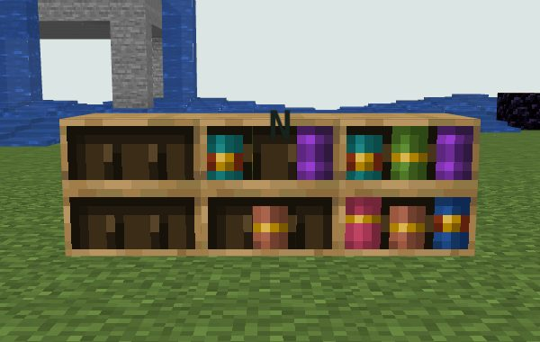
- Com Usar (U), clique na frente da estante, no nicho que quiser: o livro entra ou sai daquele nicho, como no jogo (3 em cima, 3 embaixo).
- Com Shift, enche todos os nichos de uma vez; se já estiver cheia, esvazia.
- Os livros vão junto na exportação (
books_storedno Bedrock,slot_N_occupiedno Java), mas sem dizer quais livros são: no jogo eles aparecem como livros comuns.
Água e lava escorrem
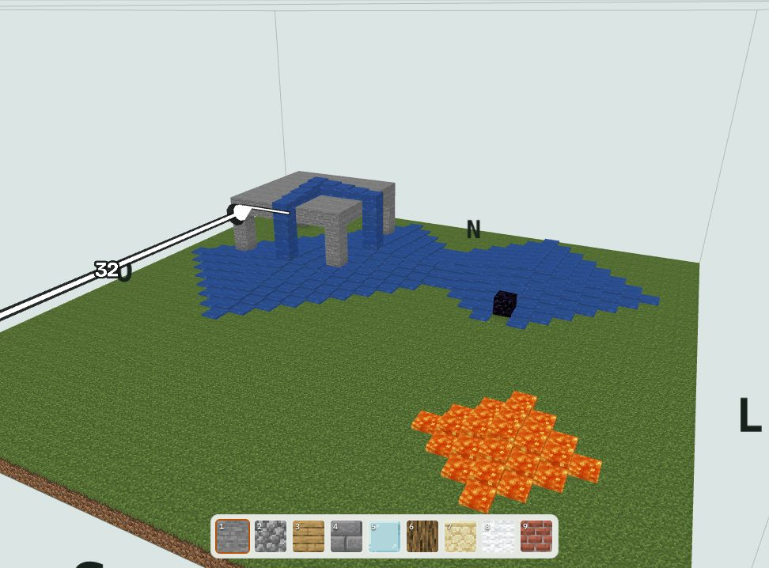
Coloque um bloco de água ou de lava (categoria Técnicos e só Bedrock) e ele escorre como no jogo, em ondas (a lava mais devagar):
- A água anda até 7 blocos para os lados, baixando um nível por bloco; a lava anda 3. Onde há buraco, o fluido cai e volta a se espalhar embaixo. Como no jogo, prefere escorrer na direção do buraco mais perto.
- Duas fontes de água com um espaço entre elas, sobre chão firme, enchem o meio com uma fonte nova (fonte infinita).
- Lava que encosta em água vira obsidiana (fonte de lava) ou pedregulho (lava corrente); lava que cai na água vira pedra.
- Tirar a fonte (ou fechar o caminho com um bloco) faz a água corrente secar.
- Ctrl+Z desfaz a colocação e tudo o que escorreu dela de uma vez.
- Para deixar a água e a lava paradas onde você colocar (ex.: montar um lago de um nível só), use Projeto → Água e lava escorrem: não. Estruturas importadas e projetos abertos não escorrem até você mexer perto.
Redstone funcionando
Os circuitos funcionam no editor como no jogo: puxe a alavanca ou aperte o botão com a ferramenta Usar (U) e o sinal anda pelo pó, liga lâmpadas, abre portas e move pistões, com os atrasos do jogo (20 tiques por segundo).
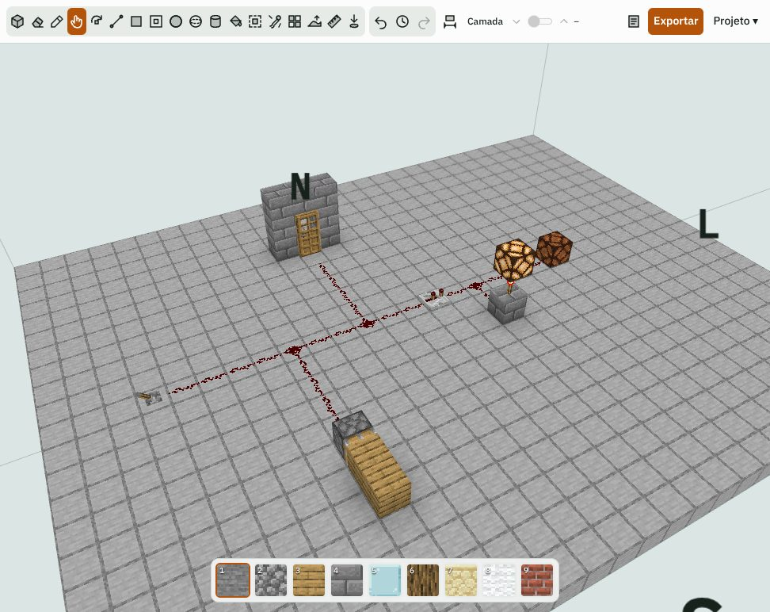
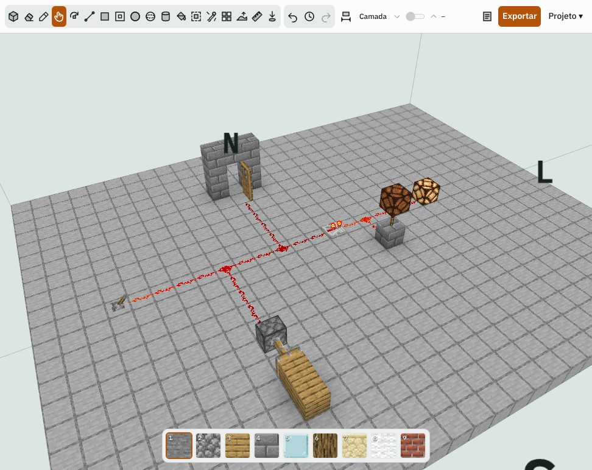
| Bloco | Como funciona aqui |
|---|---|
| Alavanca | Usar liga e desliga. |
| Botão | Usar aperta; solta sozinho depois de 1 s (pedra) ou 1,5 s (madeira). |
| Placa de pressão | Usar aperta por 1 s (não há criaturas no editor). As de peso guardam a força escolhida com Usar (0 a 15). |
| Pó de redstone | Força 15 junto da fonte, menos 1 por bloco; a cor fica mais viva quanto mais forte. Sobe e desce degraus de um bloco; um bloco sólido em cima do degrau corta o caminho. Energiza o bloco embaixo dele e o bloco para onde aponta. |
| Tocha de redstone | Apaga quando o bloco que a segura está energizado (inversor), com 1 tique de redstone de atraso. Energiza o bloco de cima. Se piscar 8 vezes em 3 s, queima e só volta depois de 8 s, como no jogo. |
| Bloco de redstone | Fonte sempre ligada, força 15. |
| Repetidor | Atraso de 1 a 4 tiques de redstone (Usar muda), devolve a força para 15 e só passa o sinal para a frente. Travado quando outro repetidor ou um comparador aponta para o lado dele. |
| Comparador | Comparar: passa a força de trás se ela for maior ou igual à dos lados. Subtrair (Usar troca o modo): força de trás menos a maior dos lados. |
| Observador | Quando o bloco da frente muda, solta um pulso de 1 tique de redstone pela parte de trás. Dois observadores frente a frente fazem um relógio. |
| Sensor de luz | Fonte com a força escolhida com Usar. |
| Lâmpada | Acende com sinal e apaga 2 tiques de redstone depois que ele some. |
| Portas, alçapões e portões | Abrem quando o sinal chega e fecham quando ele some. O que você abriu com Usar continua aberto até o sinal mudar. |
| Pistão e pistão grudento | Empurram até 12 blocos; com mais, ou com obsidiana, rocha-mãe, outro pistão estendido e afins na frente, não se movem. Plantas, tochas, pó, portas, tapetes e afins quebram. O grudento puxa de volta o bloco da frente ao recolher. O sinal vem de qualquer lado menos da frente (sem a quasi-conectividade do Java, como no Bedrock). |
| Trilho energizado e ativador | Acendem com sinal e passam a energia para até 8 trilhos iguais em linha. |
- Blocos sólidos levam o sinal como no jogo: o que é energizado forte (alavanca ou botão preso nele, tocha embaixo, repetidor ou comparador apontando para ele) energiza o pó em volta; o energizado fraco (pó em cima ou apontando para ele) liga lâmpadas, portas, pistões, repetidores e tochas encostados, mas não outro pó.
- Tudo o que a redstone muda entra no mesmo passo de Ctrl+Z da ação que a pôs para funcionar (puxar a alavanca e o que ela acendeu voltam juntos). Um relógio ligado para sempre guarda só as primeiras 5.000 mudanças nesse passo.
- Ao exportar, sai cada bloco como está na hora: pó com a força, lâmpada acesa, pistão estendido com a cabeça, repetidor travado.
- Conferido com o jogo: os mesmos circuitos (alavanca e 16 de pó, inversor de tocha, repetidor de atraso 4, pistão grudento, porta, comparador subtraindo, trilhos, alçapão) foram ligados no servidor oficial do Bedrock 1.26 e no site, e o resultado bateu bloco a bloco, inclusive a força de cada pó.
- Projeto → Redstone funcionando: sim/não desliga a simulação (Usar passa a só trocar o bloco clicado). Fica guardado no navegador.
Todos os blocos do Bedrock 1.26
A lista de blocos foi conferida com a lista oficial do jogo (1.463 blocos do Bedrock 1.26.50): o site tem todos, menos os 160 da química da Education Edition (elementos, máquinas de química, vidros resistentes coloridos e tochas coloridas), que só aparecem com o modo de química ligado.
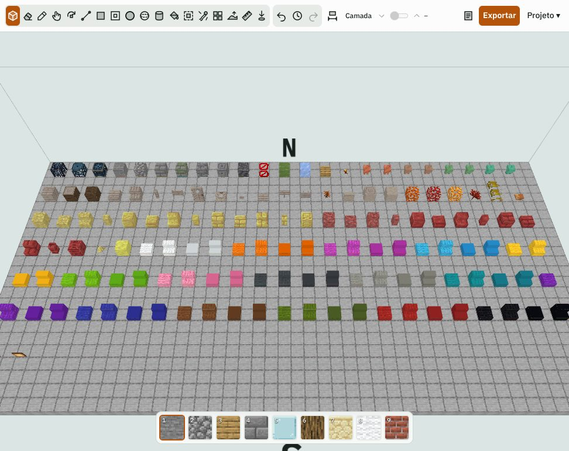
- Novos do Bedrock 1.26, marcados “só Bedrock” no nome (o Java ainda não tem; ficam de fora do .schem): toda a madeira de choupo (tábuas, tronco, madeira, descascados, laje, escada, cerca, portão, porta, alçapão, botão, placa de pressão, placas, placa pendurada, muda, prateleira) e as folhas de choupo laranja, vermelhas e amarelas; enxofre e cinábrio (bloco, polido, tijolos, entalhado, lajes, escadas e muros), o espinho de enxofre e o enxofre potente; as lajes e escadas de lã e de concreto nas 16 cores; arbusto vermelho, cogumelo de prateleira, cama de palha e as molduras (no Bedrock são blocos; aqui aparecem vazias).
- Do Java e do Bedrock: gerador de monstros, gerador de desafios e cofre (antes apareciam roxos ao abrir um mundo), dente-de-leão dourado, estátua do golem de cobre nas 4 etapas de oxidação, com e sem cera (desenho simplificado: o jogo a desenha como criatura; a pose não muda o desenho), barreira (vermelha, como o item), coluna de bolhas, gelo de geada, laje de carvalho petrificado e os 7 blocos infestados (iguais aos normais, com traça dentro).
- O minério de redstone aceso do Bedrock vira o minério normal ao abrir.
- Conferido no servidor oficial do Bedrock 1.26: cada um dos blocos novos, com e sem a direção mudada, foi exportado num mundo, aberto pelo jogo, regravado e aberto de volta no site sem nenhum bloco desconhecido.
Técnicos e só Bedrock
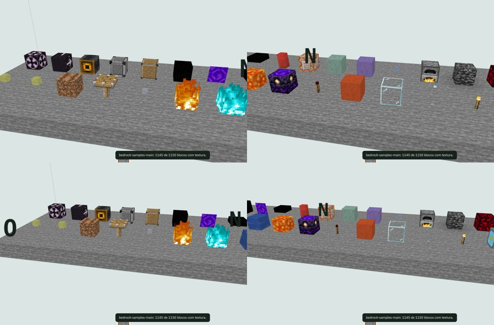
- Air (apagar): não é um bloco de verdade, é o “nada”. Com ele na hotbar, o pincel apaga (como a borracha, com os mesmos tamanhos), as formas apagam a área, o pincel de troca apaga só o bloco da máscara e Preencher o chão sem “só nos espaços vazios” limpa a camada. Nunca vai para a construção nem para a exportação.
- Técnicos (existem nos dois jogos): bloco de comando (normal, em cadeia, repetidor), bloco de estrutura, quebra-cabeça, vazio de estrutura, bloco de luz (níveis 0 a 15), rocha-mãe, água, lava, cabeça de pistão. Saem sem comando e sem configuração.
- Só Bedrock (marcados “só Bedrock” no nome): allow, deny, border, camera, obsidiana brilhante, núcleo do reator do Nether, rocha-mãe invisível e, da Education Edition, calor químico, vidro reforçado, painel de vidro reforçado e tocha subaquática. Vão no .mcstructure; ficam de fora do .schem, com aviso.
- Luz, vazio de estrutura e rocha-mãe invisível são invisíveis no jogo; aqui aparecem como cubinhos translúcidos. Água e lava escorrem também aqui (veja acima).
- Nível da luz à vista: com o bloco de luz no espaço ativo da hotbar, cada bloco de luz da construção mostra o seu nível (0 a 15) num círculo amarelo, como quando se segura o item no jogo. Com Usar o nível muda; o número acompanha.
08Barra de status
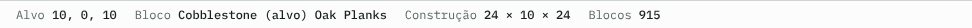
| Campo | Mostra |
|---|---|
| Alvo | Coordenadas x, y, z do bloco apontado (ou de onde o próximo bloco vai). |
| Bloco | O bloco apontado com o estado (ex.: Oak Door [facing=north, hinge=left, open=false] ou Oak Log, deitado (leste-oeste)) e, depois, o bloco ativo da hotbar. |
| Construção | Largura × altura × profundidade da parte construída; durante uma forma, também o tamanho da forma; com uma seleção, o tamanho da seleção. |
| Blocos | Total de blocos colocados. |
Medidas na tela
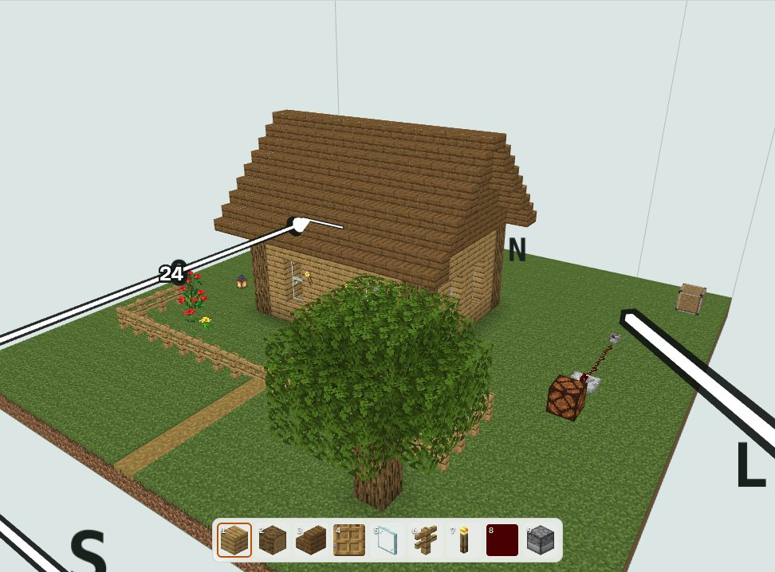
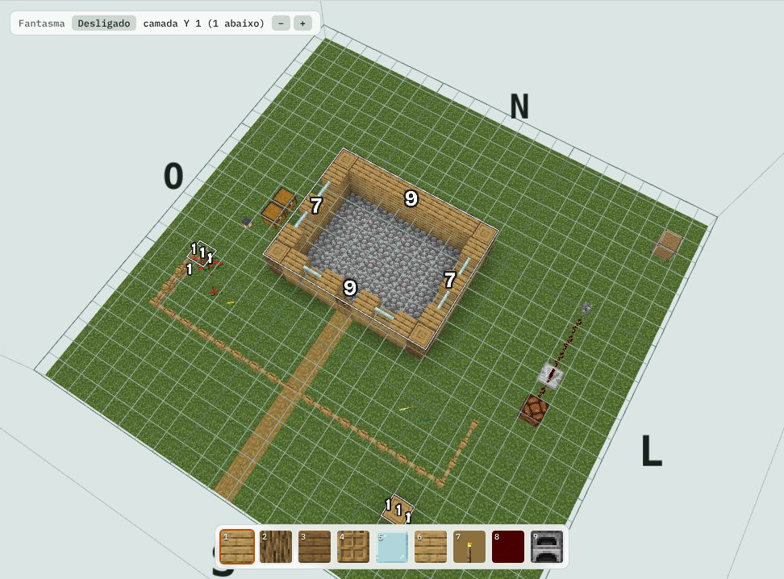
- Como num desenho técnico, linhas com setas mostram quantos blocos a construção tem em X (leste–oeste, ao longo da frente sul), Z (norte–sul, ao longo do lado oeste) e Y (altura, no canto sudeste). As medidas são da caixa que contém todos os blocos, as mesmas do campo Construção.
- Com a Camada ligada, as cotas viram uma planta baixa: uma linha contorna os blocos daquela camada e cada lado reto ganha o seu número de blocos, escrito do lado de dentro. Espaços fechados por dentro (um pátio cercado por paredes) contam como parte da planta; uma abertura até o lado de fora (uma porta) faz o contorno entrar por ela. Em paredes finas (até 2 blocos de espessura, mais compridas que grossas), o lado de fora e o de dentro dariam dois números quase iguais lado a lado: aparece só o maior; as pontas da parede (a espessura) continuam com o seu número. Uma parede em L de 13 por 9 mostra 13, 9 e o 1 de cada ponta. Quando dois números cairiam no mesmo lugar (lados curtos lado a lado), um deles vai mais para dentro, para fora da forma ou desliza ao longo do lado. Até 400 lados aparecem (os maiores); numa camada enorme, só a largura e a profundidade totais.
- Os números têm sempre o mesmo tamanho na tela; as linhas engrossam ao afastar a câmera. Elas aparecem por cima dos blocos para não sumirem atrás da construção.
- Liga e desliga no botão Medidas da barra do topo (ao lado de desfazer/refazer; aceso = ligado), em Projeto → Mostrar medidas ou com a tecla D (fica guardado no navegador).
Régua: medir de um bloco a outro
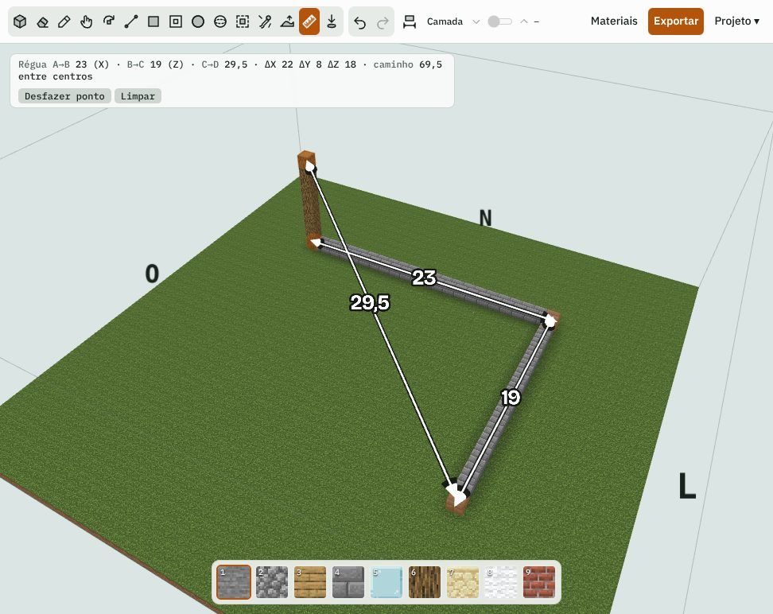
- Escolha a Régua (tecla N) e clique nos blocos na ordem: A, B, C... Cada trecho ganha uma cota como num desenho técnico, com setas nas pontas e o número no meio. Antes de clicar, uma prévia vai do último ponto até o bloco sob o mouse.
- Quando os dois blocos estão na mesma linha (só X, só Y ou só Z muda), o número conta os blocos incluindo os dois das pontas, como contar blocos no jogo: de x = 8 a x = 30 dá 23. A cota vai de face a face.
- Em diagonal, o número é a distância em linha reta entre os centros dos blocos, com uma casa decimal (ex.: 29,5).
- O aviso no canto lista cada trecho (A→B, B→C...) com o eixo, a diferença ΔX, ΔY e ΔZ entre o primeiro e o último ponto e o caminho total. Desfazer ponto tira o último; Limpar ou Esc apaga tudo.
- A régua só mede: não muda nenhum bloco nem entra no desfazer. As cotas continuam na tela ao trocar de ferramenta, mesmo com o botão Medidas desligado (ele vale só para as medidas da construção). Esc ou Limpar as apagam.
09Menu Projeto
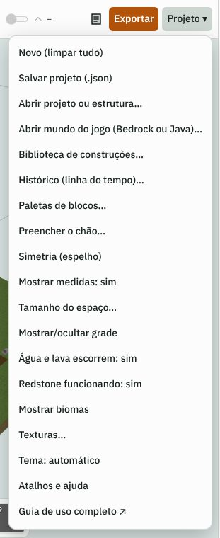
| Item | O que faz |
|---|---|
| Novo (limpar tudo) | Apaga a construção. Pede um segundo clique em até 4 s para confirmar. Com um mundo do jogo aberto, também fecha o mundo. |
| Salvar projeto (.json) | Baixa o projeto: blocos, estados, tamanho e hotbar. |
| Abrir projeto ou estrutura… | Abre um projeto .json, um .mcstructure ou um .schem (cap. 12). |
| Histórico (linha do tempo)… | A linha do tempo com todas as ações e ramos; o mesmo que o relógio da barra (cap. 03). |
| Paletas de blocos… | Cria, edita, reordena e exclui paletas; o mesmo que o aviso ✎ Paletas (cap. 06). |
| Biblioteca de construções… | Construções guardadas com nome, para colar em qualquer projeto ou mundo (cap. 03). |
| Abrir mundo do jogo (Bedrock ou Java)… | Abre um mundo do Bedrock (.mcworld) ou do Java (.zip com a pasta do mundo) para editar uma área dele e exportar o mundo com as mudanças (cap. 12). |
| Mostrar medidas: sim/não | Liga e desliga as cotas de X, Y e Z na tela (cap. 08). Tecla D. |
| Simetria (espelho) | Liga e desliga os planos de simetria (cap. 03). |
| Preencher o chão… | Cobre o espaço inteiro com um bloco de uma vez, sem marcar a área (veja abaixo). |
| Tamanho do espaço… | Muda largura, altura e profundidade (cap. 14). |
| Mostrar/ocultar grade | Liga e desliga a grade do chão (G). |
| Água e lava escorrem: sim/não | Liga e desliga o escorrer da água e da lava (cap. 07). Fica guardado no navegador. |
| Mostrar biomas: sim/não | Mostra uma placa colorida com a cor de cada bioma em cima das colunas (o mesmo que o botão Placas do pincel de bioma, cap. 03). Fica guardado no navegador. |
| Redstone funcionando: sim/não | Liga e desliga a simulação dos circuitos (cap. 07). Fica guardado no navegador. |
| Texturas… | Carrega e organiza pacotes de recursos (cap. 10). |
| Tema | Alterna automático (segue o sistema), claro e escuro. |
| Atalhos e ajuda | Resumo dos atalhos (também com ?). |
| Guia de uso completo ↗ | Abre este guia numa aba nova. A janela de ajuda também tem o link. |
Preencher o chão
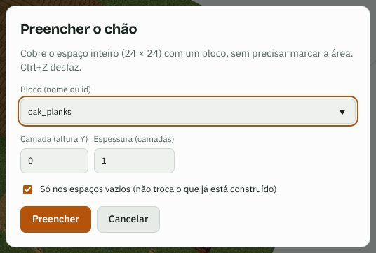
- Bloco: nome ou id, com lista para escolher; já vem com o bloco ativo da hotbar.
- Camada: a altura Y do chão (0 é o fundo do espaço; com a Camada ligada, começa nela).
- Espessura: quantas camadas encher, de baixo para cima (ex.: 3 para terra grossa).
- Só nos espaços vazios: ligado, não troca nada que já está construído; desligado, cobre tudo nessas camadas.
- Vale para o espaço inteiro (a largura e a profundidade do Tamanho do espaço). Ctrl+Z desfaz.
10Texturas
O site não traz as texturas do Minecraft (são da Mojang). Você carrega um pacote de recursos uma vez e ele fica guardado no navegador daquele aparelho. Para as texturas padrão, a própria janela tem o botão de download.
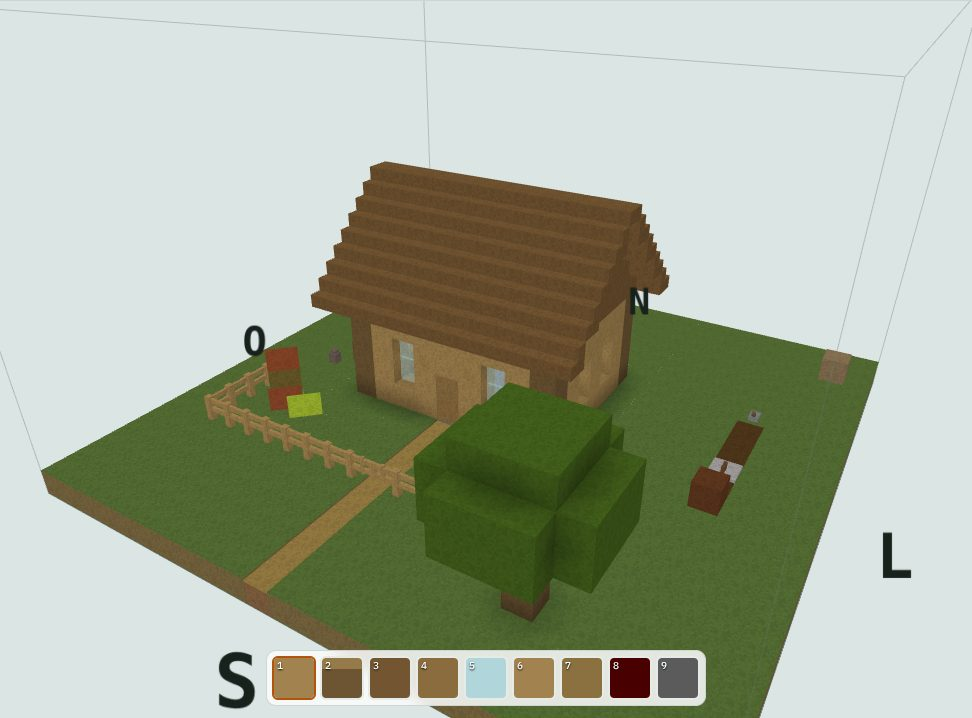
- Escolher arquivo…: aceita
.mcpack,.zipe.mcaddondo Bedrock e.zipdo Java. Pode ser o ZIP inteiro do repositório Mojang/bedrock-samples: o editor acha a pasta de texturas sozinho. - Baixar texturas padrão (Bedrock): baixa direto o ZIP oficial da Mojang no GitHub (link direto, cerca de 170 MB). Depois de baixar, toque em Escolher arquivo… e escolha o ZIP como veio, sem descompactar. Só precisa baixar uma vez por aparelho; o arquivo pode ser apagado depois de carregado.
- Escolher pasta…: a pasta de um pacote já descompactado (só no computador).
- Vários pacotes: o de cima tem prioridade; os de baixo completam as texturas que faltarem. Ex.: o padrão do Bedrock embaixo e o seu pacote personalizado em cima.
- Remover tira um pacote; Mostrar texturas desliga todos sem apagar.
- O contador mostra quantos blocos ficaram com textura.
- Grama e folhas recebem o verde do bioma de planícies; o pó de redstone, o vermelho.
- O pacote do Bedrock tem a linha do pó de redstone deitada e não tem o ponto do meio, só a cruz inteira. O site gira a linha e recorta o ponto da cruz, para o pó aparecer ligado como no jogo.
11Exportar
allow na construção, aparece o aviso de que ele fica de fora do .schem. Embaixo, o quadro do mundo novo (.mcworld), que leva também os biomas.- Nome do arquivo: acentos e espaços são trocados por letras simples e hífens.
- Deixar o terreno intacto (Bedrock, ligado por padrão): onde a construção tem ar, o arquivo usa vazio de estrutura, então o terreno do mundo continua lá. Desligado, tudo no retângulo vira ar.
- Baixar .mcstructure (Bedrock): no jogo, ponha um bloco de estrutura, modo Carregar, botão Importar, escolha o arquivo e carregue.
- Baixar .schem (Java): coloque na pasta de schematics do WorldEdit e use
//schem loade//paste. - Só a parte construída é exportada (o menor retângulo que contém os blocos), não o espaço inteiro.
- Baixar em pedaços (aparece quando a construção passa de 64 × 384 × 64, o tamanho de uma estrutura do Bedrock): sai um .zip com vários .mcstructure de até 64 × 384 × 64 e um texto (
_LEIA.txt) com o deslocamento de cada pedaço em relação ao canto de menor X, Y e Z da construção. Carregue cada um no mundo somando esse deslocamento às coordenadas do ponto de referência (por exemplo, com/structure load nome x y z, o nome sendo o do arquivo sem.mcstructure). Pedaços sem blocos não são gravados. - Um arquivo só (.mcstructure inteiro ou .schem) aceita construções de até 150 milhões de espaços na caixa; acima disso, use os pedaços.
- Exportar mundo novo (.mcworld) (aparece quando não há um mundo do jogo aberto): gera um mundo plano criativo do Bedrock com a construção em cima do chão de grama. O x e o z 0 do editor são o x e o z 0 do mundo, e o y 0 do editor fica logo acima da grama (y −60 no jogo). Leva os biomas pintados (cap. 03); as colunas sem bioma ficam de planície, como o resto do mundo plano, que o jogo gera ao andar. Blocos acima do limite de altura do mundo (y 319) ficam de fora. Conferido no servidor oficial do Bedrock 1.26.
- Cada bloco sai com o estado completo: direção, aberto, conexões, metade… No Bedrock, a tradução usa a tabela oficial Java → Bedrock do minecraft-data, e a cor das camas vai junto.
12Importar e mundos do jogo
- Projeto → Abrir projeto ou estrutura… aceita
.json(projeto),.mcstructure,.schem(Sponge v2 e v3) e.litematic(Litematica, veja abaixo). - O espaço passa a ter o tamanho da estrutura. A construção atual é substituída; salve antes se quiser guardá-la.
- O aviso no final diz quantos blocos entraram, o tamanho e quais blocos desconhecidos ficaram de fora.
- Conexões (cercas, muros, redstone, escadas) são recalculadas pelos vizinhos.
- No .mcstructure, o vazio de estrutura vira espaço vazio, e o editor escolhe o estado que mais combina com o do arquivo. Quando o Bedrock não guarda um detalhe (ex.: para onde um botão no chão está virado), fica o padrão do jogo.
- Exportar e importar de volta foi testado e devolve a construção idêntica, nos dois formatos.
Arquivos do Litematica (.litematic)
- O Litematica é o mod do Java mais usado para copiar construções e projetá-las no mundo. Os arquivos
.litematicdele abrem em Projeto → Abrir projeto ou estrutura…, como um .schem. - Escadas, portas, troncos, lajes e as outras propriedades vêm como estão no arquivo. Um .litematic com várias regiões vira uma construção só, com cada região no lugar dela.
- Testado com uma construção real de 171 × 15 × 105 (140.967 blocos, 63 tipos de bloco na paleta): abriu em menos de um segundo no computador de teste, com a mesma contagem de cada bloco que o arquivo tem.
- O site ainda não grava .litematic: para levar de volta ao Java, use o .schem (o Litematica não abre .schem, mas o WorldEdit e o Axiom abrem).
Editar um mundo do jogo (.mcworld ou Java)
Dá para abrir um mundo inteiro do Bedrock, editar uma parte dele no site e levar de volta para o jogo com a construção pronta, no lugar certo.
- No jogo: Configurações do mundo → Exportar mundo. Sai um arquivo
.mcworld. Também serve um.zipcom a pasta do mundo dentro (a que temlevel.date a pastadb), ou um .zip com o .mcworld dentro. - No site: Projeto → Abrir mundo do jogo (.mcworld)… O site lê o mundo (alguns segundos) e desenha o mapa visto de cima.
- Escolha a área: clique no mapa para pôr o centro, ou digite Centro X e Centro Z (as coordenadas do jogo). Arraste para mover o mapa; a roda do mouse e os botões + e − aproximam. Onde estou volta para a sua posição no jogo. Os botões Mundo normal, Nether e End trocam de dimensão (cada uma tem o seu mapa).
- Tamanho: de 64 × 64 até 512 × 512 blocos, sempre com a altura toda da dimensão (−64 a 319 no mundo normal, 0 a 127 no Nether, 0 a 255 no End). A área se encaixa nos chunks do jogo (de 16 em 16). No celular, o tamanho sugerido é 256 × 256.
- Carregar área e construa com todas as ferramentas. A barra de status mostra as coordenadas do jogo.
- Para mexer em outro lugar ou em outra dimensão, Trocar área. As mudanças da área anterior ficam guardadas e voltam quando você abre aquela área de novo.
- Exportar mundo (no aviso do canto ou em Exportar) gera
nome-do-mundo-editado.mcworldcom as mudanças de todas as áreas e dimensões. Abra esse arquivo no celular ou no computador: o jogo importa como um mundo novo, e o original continua como estava.
- Só o que você mudou é gravado. O site compara cada pedaço de 16 × 16 × 16 editado com o original e troca só os blocos diferentes. O resto do mundo sai do arquivo exatamente como entrou: baús com os itens dentro, placas com o texto, geradores de monstros, criaturas, aldeias, o inventário.
- Blocos que o editor não conhece (hoje, só os blocos de química da Education Edition e os que o jogo lançar depois desta versão do site) aparecem roxos, com o nome real na barra de status (ex.: Bloco do jogo: element_8). Eles voltam iguais para o mundo e podem ser copiados e colados com a seleção.
- Ao apagar ou trocar um bloco, os dados dele somem junto (os itens de um baú apagado, por exemplo). As camas colocadas levam a cor certa. A água que estava dentro de um bloco trocado (alga, escada submersa) sai com ele.
- Chunks que o jogo ainda não gerou aparecem vazios no editor e não recebem construção: o jogo apagaria o que estivesse ali ao gerar o terreno. A janela do mapa diz quantos chunks da área já existem.
- Destacar chunks não gerados (embaixo do mapa, ligado de início): o que o jogo nunca gerou fica em vermelho e os chunks gerados, mesmo só de vazio, em cinza azulado. No End, onde quase tudo é vazio, é assim que se vê até onde o jogo já foi. Passando o mouse no mapa, aparecem as coordenadas e se aquele chunk foi gerado; de perto, aparecem as divisas dos chunks.
- Terreno / Biomas (embaixo do mapa): o modo Biomas pinta cada coluna com a cor do bioma dela (o da altura do chão) e mostra a legenda com os biomas que aparecem, do mais comum ao mais raro. Passando o mouse, aparece o nome do bioma. Mundos muito antigos, sem a informação de bioma em 3D, mostram “Sem informação de bioma neste mundo”.
- Na área aberta, a barra de status mostra o bioma da coluna apontada, e o pincel de bioma (cap. 03) troca o bioma; ele vai junto em Exportar mundo.
- O site guarda no navegador o arquivo do mundo, a área aberta e as mudanças: se a página recarregar, tudo volta. Novo (ou abrir outro projeto) fecha o mundo, e o que não foi exportado se perde.
- O site edita uma cópia: o mundo no jogo não muda até você importar o arquivo exportado. Mundos de Realms e servidores não podem ser editados assim.
Mundos do Java
- No computador: ache a pasta do mundo (no jogo: Um jogador → escolha o mundo → Editar → Abrir pasta do mundo; ela fica em
.minecraft\saves). Compacte essa pasta num.zip(no Windows: botão direito → Enviar para → Pasta compactada). - No site: Projeto → Abrir mundo do jogo (Bedrock ou Java)… e escolha o .zip. O resto é igual ao Bedrock: mapa (com Terreno e Biomas e o destaque dos chunks não gerados), Mundo normal / Nether / End, área de até 512 × 512, editar, trocar de área.
- Exportar mundo gera
nome-do-mundo-editado.zipcom a pasta do mundo dentro. Feche o jogo, guarde uma cópia do mundo original e extraia o .zip na pastasaves: o mundo aparece na lista (com o mesmo nome; renomeie a pasta se quiser os dois).
- Mundos do Java 1.18 em diante (o formato com altura de −64 a 319). Chunks de versões mais antigas aparecem como não gerados: abra o mundo uma vez numa versão nova do jogo para ele converter.
- O Nether do Java tem 256 de altura (o teto de rocha-mãe fica no y 127); o mapa mostra o chão abaixo do teto.
- Os nomes dos blocos do Java são os mesmos do site, então nada se perde na conversão. Blocos que só existem no Bedrock (como permitir e negar) viram ar no mundo do Java, e o aviso conta quantos.
- Ao gravar, o site troca só os blocos que mudaram e marca os chunks mexidos para o jogo refazer a luz e o mapa de alturas ao abrir. Baús e placas apagados levam os dados junto; baús e placas novos entram vazios.
- Biomas: o Java guarda um bioma a cada 4 × 4 × 4 blocos (o Bedrock, a cada bloco). O pincel de bioma funciona, mas cada quadrado de 4 × 4 colunas fica com o bioma pintado que mais aparece nele.
- Conferido com o mundo de teste do Java (gerado pelo
scripts/gen_javaworld.py) e lido de volta pela amulet-core, uma biblioteca independente que entende mundos do Java: blocos, propriedades, biomas, o Nether e o End saíram certos. O jogo Java em si não pôde ser testado aqui (o download dele é bloqueado neste ambiente): teste primeiro numa cópia do mundo.
13Materiais
- Mostra cada tipo de bloco, do mais usado ao menos usado, com a quantidade e quanto isso dá em pilhas de 64.
- Copiar lista copia em texto, uma linha por bloco, para colar no bloco de notas ou numa conversa.
- Porta, cama e plantas altas contam as duas partes.
14Tamanho do espaço
- Padrão de 32 × 32 × 32; mínimo de 8 por lado; máximo de 16.384 de largura e de profundidade e 4.096 de altura.
- O espaço vazio não ocupa memória. A construção é guardada em pedaços de 16 × 16 × 16, e só existem os pedaços que têm algum bloco. O que pesa é a quantidade de blocos construídos: cerca de 1 byte por bloco em pedaços cheios (em testes, 134 milhões de blocos ocuparam uns 130 MB). No computador, dá para passar de 100 milhões de blocos; no celular, conte com algo como 20 a 50 milhões.
- A janela mostra quantos blocos e pedaços a construção tem e quanta memória eles ocupam.
- Distância de desenho: só os pedaços até essa distância do centro da câmera são desenhados (padrão 384 blocos). Os de longe continuam na construção e voltam quando a câmera chega perto. Numa construção enorme, diminua se a tela ficar lenta; “Tudo” desenha a construção inteira.
- Ao diminuir o espaço, os blocos que ficarem de fora são apagados. Ao aumentar, a construção fica no canto de origem.
- União de faces: faces iguais lado a lado (um chão, uma parede, um telhado do mesmo bloco) são desenhadas como um retângulo só, com a textura repetida bloco a bloco. Na tela fica igual, mas a placa de vídeo trabalha bem menos: num terreno plano de 4 milhões de blocos, a parte desenhada passou de cerca de 1 milhão de triângulos para menos de 8 mil. Escadas, plantas, água e outros blocos que não são cubos continuam um a um.
- Em construções grandes a cena é montada aos poucos, para a tela não travar. Com o espaço maior que 512 blocos, a câmera inicial olha para a construção (ou para o meio, de perto), e a grade do chão passa a ter uma linha a cada 16 blocos.
- Para não estourar a memória do desfazer, “Preencher o chão” e “Substituir” com preenchimento aceitam até 16 milhões de espaços de uma vez, e copiar aceita áreas de até 64 milhões de espaços.
15Salvar e aparelhos
| O quê | Onde fica | Observação |
|---|---|---|
| Construção atual | Salva sozinha no navegador (IndexedDB), logo depois de cada mudança | Só no aparelho e navegador em que foi feita. Só os pedaços que mudaram são gravados, então construções grandes também são salvas sem travar. Construções salvas pelas versões antigas do site são trazidas para o formato novo sozinhas. |
| Projeto .json | Arquivo que você baixa | O jeito de levar a construção para outro aparelho, guardar versões ou mandar para alguém. O arquivo novo guarda a construção por pedaços (versão 2); os projetos antigos continuam abrindo. |
| Pacotes de textura | Guardados no navegador (só as texturas usadas) | Carregue uma vez em cada aparelho. |
| Histórico (linha do tempo) | Junto com a construção, no navegador | Volta inteiro ao recarregar a página, com ramos e versões marcadas. Não vai no projeto .json: abrir ou começar outro projeto começa um histórico novo. |
| Paletas | Navegador | Valem para todos os projetos e mundos. Baixar e Importar…, na janela das paletas, levam para outro aparelho. |
| Favoritos, tema e textura ligada/desligada | Navegador | Por aparelho. |
16Tema e celular
- Tema: automático segue o sistema; claro e escuro fixam.
- Toque: um toque usa a ferramenta; arrastar com um dedo gira; dois dedos movem e dão zoom. Formas usam dois toques.
- Texturas no celular: use Escolher arquivo com o .zip (Escolher pasta não funciona em celular).
17Atalhos
| Tecla | Ação |
|---|---|
| B E I U T | Pincel, borracha, conta-gotas, usar, girar |
| L R H S O | Linha, caixa, caixa oca, esfera, esfera oca |
| V | Selecionar área |
| K | Esculpir terreno (- e + mudam o raio; Shift inverte) |
| X | Liga e desliga a simetria (espelho) |
| D | Mostra e esconde as medidas (X, Y e Z); o mesmo que o botão Medidas |
| N | Régua: clique no bloco A, depois B, C... (Esc limpa) |
| J | Teleporte: a câmera vai até o bloco clicado (Shift + clique: primeira pessoa) |
| W A S D, Espaço, F | Em primeira pessoa: andar, pular, voar (Esc sai) |
| P | Com a simetria ligada: plano no bloco apontado |
| Q | Pincel de mistura (- e + mudam o raio; Shift + clique põe o bloco clicado na mistura) |
| Y | Pincel de bioma (- e + mudam o raio; Shift + clique pega o bioma da coluna) |
| M | Pincel de troca (Shift + clique escolhe a máscara; - e + mudam o raio) |
| Ctrl+C / X / V | Copiar, recortar e colar a seleção |
| Delete | Apagar a seleção |
| R (colando) | Girar a cópia 90° |
| F / Shift+F (colando) | Espelhar a cópia (leste e oeste / norte e sul) |
| C | Mais formas: cilindro, cone, pirâmide, cúpula, arco e arestas |
| F | Balde: encher uma área fechada (Shift troca a região do mesmo bloco) |
| Shift | Pincel apaga; formas apagam; usar muda a segunda opção ou faz a árvore grande; girar volta |
| 1…9 | Espaço da hotbar |
| Ctrl+Z / Ctrl+Y | Desfazer / refazer no ramo atual (o relógio da barra abre a linha do tempo inteira) |
| [ ] | Descer e subir a camada |
| Setas | Mover a câmera (com Selecionar e uma área marcada: mover os blocos da área) |
| Page Up / Page Down | Com Selecionar e uma área marcada: subir e descer os blocos da área (Shift: 5 blocos) |
| Home | Recentralizar |
| G | Grade |
| Esc | Fecha janela, cancela forma, termina a colagem, tira a seleção, fecha menu |
| ? | Atalhos e ajuda |
18Limites conhecidos
| Assunto | Situação |
|---|---|
| Cama, placa, estandarte, cabeça | Desenhados de forma simplificada (o jogo os desenha de um jeito especial): o estandarte tem o mastro, a barra e o pano inteiro da cor, mas sem padrões. O baú tem a forma real; o baú duplo mostra uma emenda no meio. |
| Árvores com Usar | O formato imita o das árvores do jogo, mas não é idêntico ao gerador do Minecraft. Ninhos de abelha e o coração de rangedor não aparecem; fungos e cogumelos crescem em qualquer chão. |
| Copiar e colar | A cópia do Ctrl+C fica só nesta aba (não vai para a área de transferência do sistema e some ao recarregar a página); para guardar, use a biblioteca. Girar é só de 90° na horizontal (com o espelhar, cobre as 8 posições no chão). |
| Esculpir e simetria | O pincel de escultura trabalha coluna por coluna (não faz cavernas nem arcos). Na simetria, a água que escorre de uma fonte espelhada segue o próprio caminho (o escorrer não é espelhado), e cópias que caem fora do espaço não são feitas. |
| Redstone | Não funcionam: TNT, dispensador, liberador, funil, bloco musical, sino, lâmpada de cobre, gancho de armadilha, sensor de sculk e alvo como fonte. O comparador não lê baús nem molduras. Blocos empurrados pelo pistão não derrubam o que estava em cima deles (pó, tochas e plantas podem ficar flutuando), e o pistão não empurra a água. O sensor de luz não segue o dia: dá a força escolhida. |
| Água e lava | Só escorrem para espaços vazios: não levam embora plantas e tochas nem enchem blocos (sem waterlogging). A superfície é plana em cada bloco (o jogo inclina entre níveis). A lava escorre como no mundo normal, não como no Nether. |
| Histórico | Guarda até 20 milhões de mudanças de blocos (cerca de 1.000 ações). Passando disso, saem primeiro os ramos mais antigos fora do caminho atual (as versões marcadas ficam até o fim) e depois o começo do caminho. Mudar o tamanho do espaço começa um histórico novo. |
| Dados de entidade | Itens em baús, texto de placas e comandos não são exportados nem importados. No Bedrock, baús lado a lado podem virar dois simples. |
| Textura sem equivalente | Algumas texturas raras (ghast seco, contorno do pó de redstone, composteira) não existem no pacote do Bedrock e aparecem com a cor média. Os blocos da Education Edition usam a cor ou a textura do vidro e da tocha comuns. Texturas animadas usam o primeiro quadro. |
| Primeira pessoa | Precisa de teclado e mouse (no celular dá para olhar arrastando, mas não andar). Lajes, escadas e cercas contam como bloco inteiro (o degrau de 1 bloco é subido sozinho); portas e portões deixam passar abertos ou fechados. |
| Mundo do jogo | Bedrock (.mcworld) e Java 1.18 ou mais novo (.zip com a pasta do mundo). No máximo 512 × 512 por vez (troque de área para editar mais). Pedaços num formato muito antigo do jogo ficam de fora (abrir o mundo no jogo uma vez e exportar de novo resolve). Um baú colocado pelo site entra vazio e placas novas ficam sem texto. Conferido no servidor oficial do Bedrock (1.26): um mundo gerado pelo jogo, editado e exportado pelo site abre sem erros, com os blocos e os estados iguais. O mundo do Java foi conferido com a amulet-core, não no jogo. Chunks do Java comprimidos com LZ4 (opção de alguns servidores) não abrem. Teste sempre numa cópia do mundo. |
| Biomas | O pincel pinta a coluna inteira com um bioma só (não dá para pôr uma caverna exuberante embaixo de uma planície). Só o topo do bloco de grama muda de cor: a lateral continua com a cor do pacote. A vegetação do Transformar o terreno imita o jogo, mas não é igual ao gerador do Minecraft (sem estruturas, lagos, cogumelos de pântano ou blocos de abelha). Áreas de nascimento de estruturas (saqueadores, bruxas da cabana, blazes, guardiões) não podem ser criadas: o jogo ignora as feitas fora da geração (testado). O .mcstructure e o .schem não levam bioma; só o mundo exportado. |
| Importação | Nomes de versões antigas (Java antes da 1.13, nomes antigos do Bedrock) e o .schematic do MCEdit não abrem. A água dentro de blocos (segunda camada do .mcstructure) é ignorada. |
| Rotação dentro do jogo | Faltam conferências no jogo do rosto do observador, do padrão da terracota esmaltada e do crafter no Bedrock. |
| Crafter | Gira só nas quatro direções horizontais. |
| Fornalhas e âncoras de projetos antigos | Voltam com a frente para o norte; gire de novo com T. |